I'm at 鰺ヶ沢海水浴場 in 鰺ヶ沢町, 青森県
https://
app.foursquare.com/share/checkin/
6a21290e971f3b31eadc35e4?s=ASpQ9TH0IsiKFmVxB_Riw7O8n1M&lang=en
…
タイムライン要約
今日のまとめ
以下はタイムラインの要約です。
* **ゲーム業界の多様な動向**: 新作ゲームの発表や体験版の配信、人気タイトルのコラボイベント、そして一部のサービス終了に関するニュースが多数報じられました。また、AIを活用したゲームエンジン開発の話題も注目されました。
* **IT・AI技術の進展と応用**: AIの画像認識能力やハルシネーションに関する検証、MicrosoftによるUNIX系コマンドのWindowsへの移植、企業向けAIエージェントのグローバル展開など、AIおよびIT技術の進化と実用化に関する情報が多く共有されました。
* **社会経済情勢の広範な変化**: 政治関連の話題（高市氏に関する音声問題、消費税減税案）、企業の大型買収・統合（PayPayの生命保険参入、ヤマダ・エディオン）、日銀の金融政策（利上げ予想、続く円安）など、多岐にわたる経済・社会ニュースが報じられています。
* **生活のヒントと個人の体験**: 精神科医による脳疲労の原因に関する解説や、スマートフォンの不具合に関するユーザーの疑問、さらには青森や秋田での観光や食事といった、日常生活に密接した情報や個人の投稿が散見されました。
* **ゲーム業界の多様な動向**: 新作ゲームの発表や体験版の配信、人気タイトルのコラボイベント、そして一部のサービス終了に関するニュースが多数報じられました。また、AIを活用したゲームエンジン開発の話題も注目されました。
* **IT・AI技術の進展と応用**: AIの画像認識能力やハルシネーションに関する検証、MicrosoftによるUNIX系コマンドのWindowsへの移植、企業向けAIエージェントのグローバル展開など、AIおよびIT技術の進化と実用化に関する情報が多く共有されました。
* **社会経済情勢の広範な変化**: 政治関連の話題（高市氏に関する音声問題、消費税減税案）、企業の大型買収・統合（PayPayの生命保険参入、ヤマダ・エディオン）、日銀の金融政策（利上げ予想、続く円安）など、多岐にわたる経済・社会ニュースが報じられています。
* **生活のヒントと個人の体験**: 精神科医による脳疲労の原因に関する解説や、スマートフォンの不具合に関するユーザーの疑問、さらには青森や秋田での観光や食事といった、日常生活に密接した情報や個人の投稿が散見されました。
安藤昇先生はAntigravityを使っておられた
我々のような個人（に近い）開発でやっていってるか、組織へのAI導入みたいな壁とぶつかってるかの差な気もしてます
後者はセキュリティとかコスト面とかの課題にぶち当たってるとこも多そう
ニケちゃん
@tegnike
リプや引用見てると割と共感する人が多いみたいなんだけど、あんまり共感できないのはTLの層が全く違うからだろうか x.com/gosrum/status/…
「Desktop Mate」に“春日部つむぎ”のDLCが登場。元気なギャルピースや自撮りなど，細部までこだわった愛らしい演出が満載
https://
4gamer.net/s/G087007.2606
04032
…
リリースに合わせてアニメーションを確認できるPVも公開
「しっかり休んだはずなのに、なぜか頭がボーッとする」「集中力が続かない」という方必見！
解説はこちら！
仕事や勉強の合間に、「ちょっと一息つこう」と思ってスマホを手にする、SNSをチェックしたり、動画を観たり、ネットニュースを読んだり……。現代人にとって、これはごく当たり前の「休憩...
sapporo.yuik.net
「視覚」こそが脳疲労の最大の原因という話。
この可視化かっこいい！！うちでもやってみるか
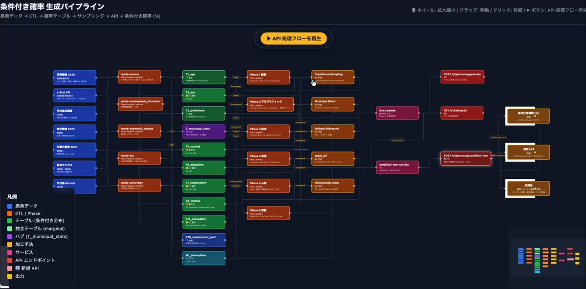
抹茶もなか
@GianMattya
AIで規模デカめのシステムを作る際にどうすれば全体の構造を見失わずに管理できるのかずっと考えてるんだけど、AIを使う前提ならドキュメントで管理するのではなく代わりに可視化用の専用Webサイトを作成し、人間がわかりやすいように可視化してやれば良いのではという気持ちになってきた
手塚治虫「火の鳥」などに影響を受けた超現実的ナラティブADV「犬の夢」，発売日を2026年10月29日に延期
https://
4gamer.net/s/G101289.2606
04031
…
25歳の誕生日に宇宙人に連れ去られた犬となり，奇妙な夢と選択を通じて真実を探っていく
「ワールドウィッチーズX」，2026年7月3日11：00をもってサービス終了
https://
4gamer.net/s/G093002.2606
04030
…
2025年10月14日のサービス開始から約9か月でサービス終了となる
Macユーザーの僕でも『Forza Horizon 6』が遊べた。月額1,550円、ソフト購入不要です
Macユーザーの僕でも『Forza Horizon 6』が遊べた。月額1,550円、ソフト購入不要です | ギズモード・ジャパン
これからの季節に。1.92インチの大画面でスポーツに最適なHUAWEIのスマウォ #BuyPR
これからの季節に。1.92インチの大画面でスポーツに最適なHUAWEIのスマウォ | ギズモード・ジャパン
「高市首相の公設秘書とサナエトークンを作り誹謗中傷動画の制作をした松井氏の打ち合わせの音声」が明日の国会で流されて、高市首相が誰の音声なのか答えるイベントが行われるよー。
生放送見たいなぁ、、、
お豆さん
@hanataretyuunen
長妻：渡した音声の確認は？
高市総理：規約を確認したら他人に聞かせてはいけないとあったので文字起こしした。
(必死やな)
長妻：文春から許可もらってる。確認して明日の参議院で答弁を。
(高市、目が点に)
(ｳｹﾙ)
#国会中継
外国人観光客がディズニーシーの通路でカップ麺を食べて炎上→メディアが運営会社に問い合わせた結果、さらに炎上する事態に・・・ #炎上
外国人観光客がディズニーシーの通路でカップ麺を食べて炎上→メディアが運営会社に問い合わせた結果、さらに炎上する事態に・・・ - オレ的ゲーム速報@刃の記事ページ
jin115.com
『エースコンバット8』本日6月4日22時に最新トレイラー公開！“10分間”にわたり世界観やゲームプレイの詳細を紹介
https://
gamespark.jp/article/2026/0
6/04/167381.html?utm_source=twitter&utm_medium=social&utm_content=tweet
…
アメリカ・メキシコ国境に地下トンネル、麻薬密輸の最前線
https://
nikkei.com/article/DGXZQO
GN02CIV0S6A600C2000000/?n_cid=DSPRM1489&n_tw=1780543795
…
メキシコ連邦検察庁は約265mの地下トンネルを発見したと発表。
メキシコ政府がトンネル摘発の成果を誇示する裏には、ある焦りが見え隠れします。
米メキシコ国境に秘密の地下トンネル、麻薬密輸の最前線 過去には1キロ超の長さも
根回しって大切なんだなって
改めて思いました
日本はゲイカップルが結婚出来ないので別れやすいですが、フランスなど結婚的なものが認められてるゲイカップルの養子は、異性婚の養子と比べて、学業成績や情緒に違いはほぼないとの調査結果です。
子供の性的嗜好はゲイの養子でも異性婚の養子でも違いはないそうです。
アレン様
@Allen_Japan_No1
アレン様、ゲイカップルが子供を持つことに“反対”するワケ「自分で産んでいないわけだから」(スポニチアネックス)
#Yahooニュース
https://
news.yahoo.co.jp/articles/347c6
1ae8f32ae844855d8e39857d87841760236?source=sns&dv=sp&mid=other&date=20260604&ctg=ent&bt=tw_up
…
聖地巡礼 氷の城壁
Microsoft、UNIX系コマンドをWindowsに移植した「Coreutils for Windows」一般公開
Microsoft、UNIX系コマンドをWindowsに移植した「Coreutils for Windows」一般公開
【日経特報】PayPay、生命保険に参入 T&D子会社を1600億円で買収へ
PayPay、生命保険に参入 T&D子会社を1600億円で買収へ
場所特定自体はハルシネーションだけど、画像の特徴自体はちゃんと理解できている
日本語 OCR 性能も（DeepSeek 自体が前 OCR 出してたこともあってか）そこそこ高そう！フロンティアモデルには劣るかもだが、とりあえずモダリティがないよりかは圧倒的にマシ
おっ、辰己先生だ！
放送大学コンテンツ
@OUJ_contents
きょう放送した「デジタルリテラシーの近未来」、
見逃した！という方は、YouTubeで全編公開中です。
第1回「ロボット・AIと社会 」
#久夛良木健 #太田智美 #内田かおり
第2回「AI・デジタルリテラシーと教育」
#鈴木秀樹 #安藤昇 #高田眞吾
こちらの再生リストからどうぞ↓
DeepSeek
http://
chat.deepseek.com の画像認識モード、普通に日本語出せるし画像認識もできるけど自信満々にJR玉川駅とかいう謎の存在をハルシネーションしてしまうな（DeepSeek v4 はハルシネーションが元々多かったはず、立川を玉川と読み間違えた？）
Torishima / INTP
@izutorishima
DeepSeek を久々に開いたら画像認識モード（ベータ版）なんてのが追加されてたけど DeepSeek v4 って画像入力対応してないはずでは・・・
「Siriもオフ」というのだからiPhoneか。もしかしたらスパイウェアをインストールしちゃってる？
オリコンニュース
@oricon
小島瑠璃子が怒り
｢会話した内容が広告で出てくるのはなぜ？｣
https://
oricon.co.jp/news/2458973/f
ull/?utm_source=Twitter&utm_medium=social&ref_cd=jstw003
…
検索した内容に関連する広告が表示されるのはわかるが、「Siriもオフにしているのに、会話した内容が広告で出てくるのはなんなんですか？」と疑問。日常で感じている“スマホ盗聴疑惑”への怒りを明かした
ロボットを雇って自動化していく「Shipping Store Simulator 2037」，デモ版を配信開始。小さな集荷拠点から物流センターへと成り上がろう
https://
4gamer.net/s/G101285.2606
04028
…
ロボットたちは，さまざまな業務をプレイヤーの代わりに行ってくれるので，どんどん雇って，仕事を自動化しよう
深津 貴之 / THE GUILD, noteさんがリポスト
【累計4,800本】星野リゾートが「事前の原稿チェックなし」でスタッフnoteを続ける理由。｜星野リゾート #企業のnote
【累計4,800本】星野リゾートが「事前の原稿チェックなし」でスタッフnoteを続ける理由。｜星野リゾート
慌ててロリ要素追加
「Fate/Grand Order」が「スイーツパラダイス」9店舗と7月1日よりコラボ。江ノ島に期間限定の「海の家」もオープン
https://
4gamer.net/s/G026651.2606
04029
…
「海の家」限定のコラボメニューや「水着衣装」の限定イラストを使用したグッズなどが用意される予定だ
本当に綺麗……！！
輿水畏子さんがリポスト
シェリハン
未発表の『ジョジョの奇妙な冒険 アイズオブヘブン R』がブラジルのレーティング機関にて登録。『オールスターバトル R』と同じく現行機向けリマスターか
https://
gamespark.jp/article/2026/0
6/04/167380.html?utm_source=twitter&utm_medium=social&utm_content=tweet
…
画像は『ジョジョの奇妙な冒険 アイズオブヘブン』公式サイトより。
朗読劇に小道具？どうすんの？という疑問もゲネプロで見事氷解。謎の答えはぜひその目で見届けていただきたい！
朗読劇『沙耶の唄』
@saya_roudoku
#朗読劇沙耶の唄
劇場入りしました！
スタッフ皆様のお力で、素敵な美術や照明や音響や映像が着々と準備されています。
場内は撮影禁止ですので、出演者さんたちの勇姿と共に、スタッフワークも是非目に焼き付けてお帰り頂けたら嬉しいです！
http://
l-tike.com/song-of-saya/
PCなどの使用済みIT機器を再生材に NTTと三菱マテ、新会社「NTTサーキュラスト」設立へ
PCなどの使用済みIT機器を再生材に NTTと三菱マテ、新会社「NTTサーキュラスト」設立へ
明日11時より！
☆┈┈┈┈┈┈┈┈┈┈┈☆
復刻！
『 #ときめきエモーション 』
REVERSIガシャ
☆┈┈┈┈┈┈┈┈┈┈┈☆
ときめきエモーション
歌唱：REVERSI
作詞・作曲・編曲：神山羊
ガシャ開催期間
6/5 (金) 11:00 ～ (予定)
お楽しみに
#学マス
これがiPhone 18 Proのカラーラインナップ？新色のダークチェリーも気になるぞ
これがiPhone 18 Proのカラーラインナップ？新色のダークチェリーも気になるぞ | ギズモード・ジャパン
余裕の20000mAh。エレコムの大容量モバ充が33%オフなら見逃せない #BuyPR
余裕の20000mAh。エレコムの大容量モバ充が33%オフなら見逃せない | ギズモード・ジャパン
ドランクドラゴン
明日11時より！
☆┈┈┈┈┈┈┈┈☆
復刻！
#ときめきエモーション
REVERSIガシャ
☆┈┈┈┈┈┈┈┈☆
復刻Pアイドル
【ときめきエモーション】葛城リーリヤ
【ときめきエモーション】紫雲清夏
復刻サポートカード
長旅おつかれさま！
ひっぱりじゅーなん
開催期間
6/5
とっても可愛い！！！！
明日11時より！
☆┈┈┈┈┈┈┈┈┈┈☆
#初星フェス vol.3
『 #ガラクタロード 』
新サポカ紹介！
☆┈┈┈┈┈┈┈┈┈┈☆
新SSR サポートカード
『私を楽しませろ』
開催期間
6/5 (金) 11:00 ～ (予定)
お楽しみに
ヘヴィメタルサウンドに乗せたハードコアアクション「ELDERBORN: VENGEANCE」がアナウンス。前作から約6年ぶりとなる続編が登場
https://
4gamer.net/s/G101284.2606
04026
…
スキルツリーや武器のカスタマイズを導入。古代遺跡や砂漠，要塞を舞台に新たな戦士の復讐劇が描かれる
輿水畏子さんがリポスト
可愛い〜！届きました！
明日11時より！
☆┈┈┈┈┈┈┈┈┈☆
『 #ガラクタロード 』
ライブシーン紹介
☆┈┈┈┈┈┈┈┈┈☆
歌唱：葛城リーリヤ (CV. 花岩香奈)
作詞：Rou-hou
作曲：佐藤貴文
編曲：鈴木俊介、大澤めい (Bandai Namco Studios Inc.)
期間
6/5 (金) 11:00 ～ (予定)
「カルドセプト ザ ファースト」，体験版をSteamで配信開始。入手したカードは製品版に引き継ぎ可能
https://
4gamer.net/s/G098189.2606
04025
…
「カルドセプト」シリーズの1作目をベースに新機能を搭載した復刻版
明日11時より！
☆┈┈┈┈┈┈┈☆
SSR出現率1.5倍
#初星フェス 開催！
☆┈┈┈┈┈┈┈☆
初星フェス限定 Pアイドル
【ガラクタロード】葛城リーリヤ
開催期間
6/5 (金) 11:00 ～ (予定)
#学マス
『バニーガーデン2』DLC第3弾でキャスト6名に新曲追加！“すごい衣装”を着て熱唱するPVも刺激的…
https://
gamespark.jp/article/2026/0
6/04/167379.html?utm_source=twitter&utm_medium=social&utm_content=tweet
…
明日11時より！
◤￣￣￣￣￣￣￣￣￣￣￣￣￣
新プロデュース／新シナリオ
「Hatsuboshi IDOL FESTIVAL」
＿＿＿＿＿＿＿＿＿＿＿＿＿◢
リーリヤ、清夏の
STEP4がついに明日実装！
お楽しみに
#学マス
ワートレイギリスに関しては「CD歌唱キャストが揃うのは永遠に無理なのでせめてメンバー全員で歌ってほしい」「オリメンとかもういいから早よ披露してくれ」で心がふたつある〜…なので…ダークライも隣で困惑しております。
＼6月10日(水)14:59まで／
クールタイプガチャ開催中
イベントボーナス対象のタイプのみが出現しますよ
※詳細はお知らせをご確認ください
#バンドリ #ガルパ
朗読劇沙耶の唄、ゲネプロ拝見して参りました！
再現度マジ凄ぇ…朗読劇ってもんの認識が変わりましたわ。ホラー、怪談との相性最高やね！
★5 #花園たえ の3Dライブ衣装はこちら
「裁縫セット」と「コイン」を使って衣装解放することで、他のキャラクターに着せることも可能です
#バンドリ #ガルパ
「チャペルに響く旅立ちの鐘ガチャ」に登場する、★5 #花園たえ をご紹介
「絶対にミスしないように、
もう１回最初から飛んでみよう！」
また、★5メンバーは3Dライブ衣装が獲得できますよ
#バンドリ #ガルパ
サポート詐欺
https://
hospital.fujita-hu.ac.jp/topics/i05j6a0
000003uai.html
…
Kyoko HANADA(花田 経子)
@cchanabo
#cchanabomemo
1300件超える患者の個人情報漏洩か 看護師が6年前から個人用パソコンに保存…ランサムウェア攻撃を受ける 愛知･豊明市の藤田医科大学病院
https://
newsdig.tbs.co.jp/articles/cbc/2
707705
…
CBCテレビさん、本件はランサムウェア攻撃ではありませんので記事の訂正をお願いします。 @cbctv_news
「チャペルに響く旅立ちの鐘ガチャ」に登場する、★5 #山吹沙綾 をご紹介
「私、父さんと母さんの子どもで
よかった」
また、★5メンバーは3Dライブ衣装が獲得できますよ
#バンドリ #ガルパ
★5 #山吹沙綾 の3Dライブ衣装はこちら
「裁縫セット」と「コイン」を使って衣装解放することで、他のキャラクターに着せることも可能です
#バンドリ #ガルパ
アニマフォルティナ配信ないんだ…。11thの前に配信欲しいよな〜たぶん歌うし。
カメラを起動させてない時にそのモスキートトーンが鳴ったんです、、、
スパイアプリでも入ってますか？？
6月4日(木)15:00より「チャペルに響く旅立ちの鐘ガチャ」開催中
下記のメンバーが期間限定で登場！
★5 #山吹沙綾
★5 #花園たえ
★4 #市ヶ谷有咲
※期間限定メンバーは、今後再登場する場合がございます。詳細はお知らせをご確認ください。
#バンドリ #ガルパ
公式WEBショップでは、ゲーム内よりお得にスターなどの商品を購入することができますよ
https://
app-pay.jp/app/bang_dream
_gbp
…
#バンドリ #ガルパ
私のiPhone、分割払いが2ヶ月前くらいに終わった途端にライトニングケーブルでの充電が出来なくなりまして、背面のワイヤレス充電に頼ってまして、さらにカメラを起動させるとピントを合わせる動作音がモスキートトーンのように鳴るようになった。
ここまでまぁ経年劣化なんですが、先日
やり方教えましょうか？
TBS NEWS DIG Powered by JNN
@tbsnewsdig
【速報】高市総理「有料会員になって聞くのは難しい」 高市陣営のネガキャン動画疑惑で公設秘書のやり取り音声を文春が公開
https://
ift.tt/48vB0WK
「元祖！バンドリちゃん」配信記念プレゼント！
期間中ログインした方全員に、ミニアニメ「元祖！バンドリちゃん」第31話〜第34話内のガルパメンバーのワンシーンを使用したスタンプをプレゼント
#バンドリ #ガルパ #元祖バンドリちゃん
ヒトiPS細胞活用の“脳が若返る鼻スプレー”、投与された中年マウスの記憶力や認知機能が改善 学術誌で掲載
ヒトiPS細胞活用の“脳が若返る鼻スプレー”、投与された中年マウスの記憶力や認知機能が改善 学術誌で掲載
本日22:00よりミニアニメ「元祖！バンドリちゃん」配信
最新話の配信を記念して、期間中ログインした方全員に「スター50個」をプレゼント
※6月5日(金)14:59までにログインして、プレゼントよりお受け取りください
#バンドリ #ガルパ #元祖バンドリちゃん
別カード扱いになるなら2連爆発いけるんじゃない？ってフォロワーさん言っていたけど本当にいけるんだ。やったー！
メモリ、ストレージのESSENCOREブースより。コックピットでSSDがクルクル回ってます
#COMPUTEX2026
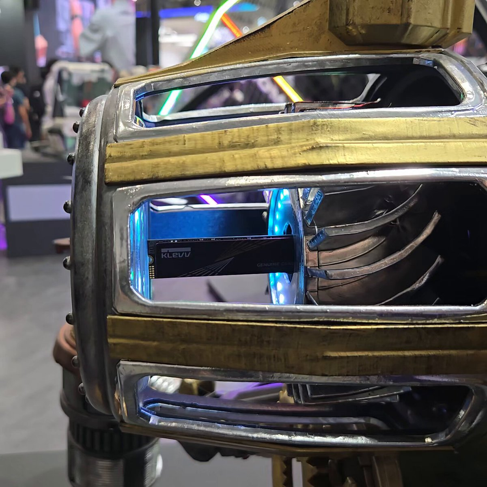
この展示で「お手を触れないでください」か…
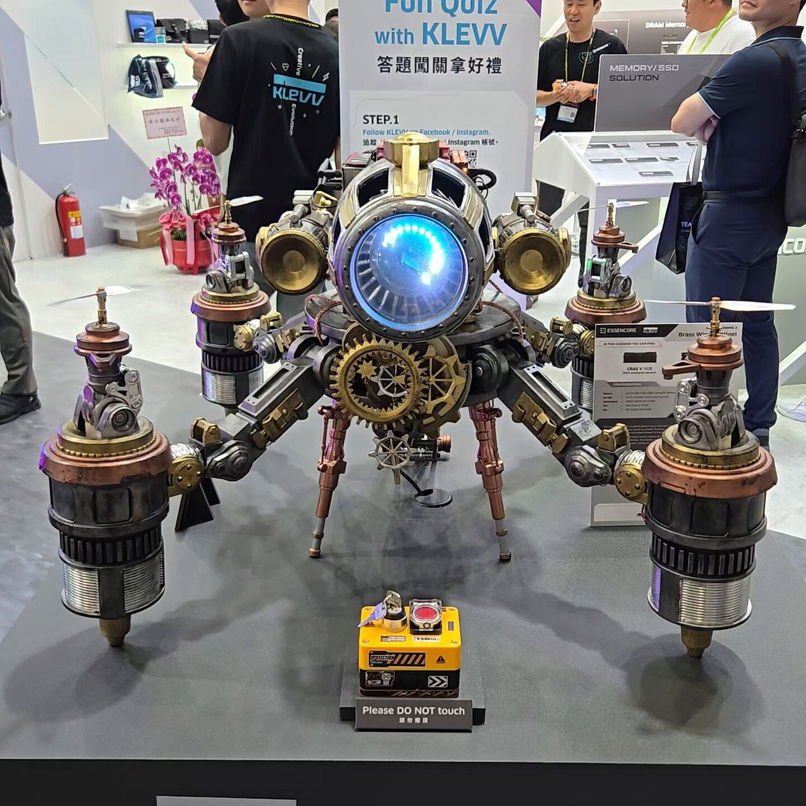
【悲報】「ノーベル平和賞」まで受賞した国際人権団体さん、事務局長によるパワハラで退職者や求職者を出していたことが発覚してしまう #酷い話・事件
【悲報】「ノーベル平和賞」まで受賞した国際人権団体さん、事務局長によるパワハラで退職者や求職者を出していたことが発覚してしまう - オレ的ゲーム速報@刃の記事ページ
jin115.com
人工知能に支配された世界をトラックで旅するSFドライビングADV『DETOUR』ゲームプレイトレイラー！
トラックは単なる移動手段ではなく、追加するツールの一つ一つがマシンの外観とプレイ体験を変化させるとのこと。
https://
gamespark.jp/article/2026/0
6/04/167378.html?utm_source=twitter&utm_medium=social&utm_content=tweet
…
https://
x.com/i/status/20618
63140397117715/video/1
…
【飲酒運転】中国人が小学生４人ひき逃げ事件を起こす「二度と車を運転しない」→日本の司法「中国人は反省してて偉い！執行猶予でおっけー！」→その半年後に無免許運転
【埼玉】中国人が小学生４人ひき逃げ事件を起こす「二度と車を運転しない」→日本の司法「中国人は反省してて偉い！執行猶予でおっけー！」→その半年後に無免許運転 : ハムスター速報
ついに梅雨入りかー、快晴の時期に外出ておいてよかったかな
住宅ローン「超長期」急増、首都圏新築は3人に1人 家計にリスク
住宅ローン「超長期」急増、首都圏新築は3人に1人 家計にリスク
スペースX上場、引受手数料は870億円 過去最大級で潤うウォール街
スペースX上場、引受手数料は870億円 過去最大級で潤うウォール街
テレビ朝日ＨＤ株価が一時4.6％高 野村絢氏が第8位株主に
テレビ朝日HD株価が一時4.6%高 野村絢氏が第8位株主に
「プレステ」グッズが「しまむら」にて6月10日発売！ハード/コントローラーをあしらった収納ポーチなど、遊び心と実用性ある雑貨がラインナップ
https://
gamespark.jp/article/2026/0
6/04/167377.html?utm_source=twitter&utm_medium=social&utm_content=tweet
…
ゴメンナサイゴメンナサイッ
so cute!!
Switch2版「レゴ バットマン：レガシー・オブ・ザ・ダークナイト」，9月18日に発売決定
https://
4gamer.net/s/G093853.2606
04024
…
本作は，若きブルース・ウェインがゴッサム・シティのヒーロー「バットマン」に成長する物語を描く，オープンワールド型アクションアドベンチャーゲームだ
東京の部屋探しで「広さ」を妥協したけど…。無印良品の名作でキッチンに新たなスペースが生まれました
東京の部屋探しで「広さ」を妥協したけど…。無印良品の名作でキッチンに新たなスペースが生まれました | ギズモード・ジャパン
エアバス「超長距離」旅客機、初のテスト飛行 世界最長の航続22時間
エアバス「超長距離」旅客機、初のテスト飛行 世界最長の航続22時間
うれしっ！
「Assetto Corsa EVO」，Audi R8 LMS GT3 Evo II，Datsun 240Z，Porsche 935，Porsche 911 GT2 RS Clubsport Evoを追加
https://
4gamer.net/s/G081347.2606
04023
…
新たなパーティクルシステムによりタイヤスモークや水しぶき表現が進化。コミュニティ向け車両制作ツールも公開
なんか飛んだ？横田か厚木
ルビオ米国務長官「検閲で過去消えず」 天安門事件37年で声明
ルビオ米国務長官「検閲で過去消えず」 天安門事件37年で声明
セブンネットショッピングの雑誌取り置き(花とゆめ)の年間購読が廃止されたから毎号注文に変わってたんだが、もう次号(明日発売ではなくその次)が売りきれてて注文できない...次々号を予約したが、次号はどこかで買わねば。受付開始が発売の何日前なのかがわからん
ITmedia NEWSさんがリポスト
さらば、Windsurf 「Devin Desktop」にリニューアル、ClaudeもCodexも一元管理
さらば、Windsurf 「Devin Desktop」にリニューアル、ClaudeもCodexも一元管理
ギズモード・ジャパン（公式）さんがリポスト
最近FPSしないし思ったより安いしトラックボールデビューしてみようかな
Nape Proも届くけど
ギズモード・ジャパン（公式）
@gizmodojapan
ボールの位置を調整できるトラックボール
「Keychron T1 HE」7,480円〜
きょう19時からクラファン開始です↓
Torishima / INTPさんがリポスト
GENIAC 第4期の基盤モデル開発で選ばれた企業
https://
nedo.go.jp/content/800056
193.pdf
…
ということで、16GB程度のメモリのマシンなら unsloth/gemma-4-12b-it-GGUF UD-Q4_K_XL がおすすめ。モデルは今日お昼ごろ更新された新しいものを使うこと。私は Unsloth Studio
https://
github.com/unslothai/unsl
oth
… で動かしている
GitHub - unslothai/unsloth: Unsloth Studio is a web UI for training and running open models like...
輿水畏子さんがリポスト
結構ガッツリ体格差です…
きんさん（なれはて/まのさば二次小説/まのさば声優陣応援）
@PERSONA3210
横に並べると結構身長差を感じますね…… x.com/Kotokoto_iroir…
こわーい？地雷系ガール参戦『ドルフロ2』Mk23「バスティ」登場のイベント「電波重度依存」開催―「カブタック」コラボスキンも期間限定販売中
https://
gamespark.jp/article/2026/0
6/04/167376.html?utm_source=twitter&utm_medium=social&utm_content=tweet
…
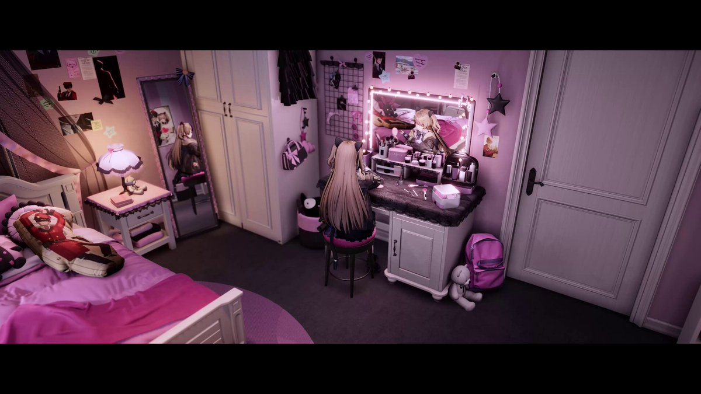
暗闇を怖がる子どもが，家中の明かりを消してベッドへダッシュ。かわいらしい見た目の心理ホラーADV「ダークフォビア」，体験版配信開始
https://
4gamer.net/s/G101279.2606
04022
…
目標は，寝る前に明かりをすべて消すこと。一見シンプルながら，脱出ルートを組み立てる面白さがある
Key新作「anemoi」マスターデータ流出、個人情報も漏えいか ビジュアルアーツに不正アクセス 取引先のマイナンバーも
Key新作「anemoi」マスターデータ流出、個人情報も漏えいか ビジュアルアーツに不正アクセス 取引先のマイナンバーも
ＮＴＴファイナンスが1650億円の大型起債 金利変動への「耐性」示す
NTTファイナンスが1650億円の大型起債 金利変動への「耐性」示す
ブラジル、原油3割増産で世界5位浮上へ 中印に輸出・日本は出遅れ
ブラジル、原油3割増産で世界5位浮上へ 中印に輸出・日本は出遅れ
大学定員「東京23区規制」続けるか、政府が検討開始 28年に期限
大学定員「東京23区規制」続けるか、政府が検討開始 28年に期限
まともに動いている。12Bでこれだけできるのは素晴らしい！
ネクソン版「オーバーウォッチ」のティザーサイトがオープンに。韓国のPCプレイヤーに向け最適化
https://
4gamer.net/s/G048450.2606
04021
…
韓国国内でのサービスと運営を担う
「宇宙からドローンを遠隔充電する装置」中国が開発中
「宇宙からドローンを遠隔充電する装置」中国が開発中 | ギズモード・ジャパン
いちいちレンズを外さなくていい。望遠機材をサッと出し入れできる軽量カメラバッグ #BuyPR
いちいちレンズを外さなくていい。望遠機材をサッと出し入れできる軽量カメラバッグ | ギズモード・ジャパン
ジムでウォーキングマシン使うより、隣町のジムまで歩くほうが、賢いのでは！？
可憐な美少女たちが大激戦！3vs3のマルチプレイFPS『WTF - Waifu Tactical Force』プレイテストが6月4日19時よりスタート
https://
gamespark.jp/article/2026/0
6/04/167375.html?utm_source=twitter&utm_medium=social&utm_content=tweet
…
Steamストアページからアクセスのリクエストが可能。アニメ調のビジュアルが印象的で、ハイテンポな戦闘が繰り広げられる美少女シューターです。
「サンキューピッチ」のブラウザゲーム「桐山を止めろ！阿川先生のオクトパスホールドチャレンジ」公開。タップ数に応じた特製壁紙を配布
https://
4gamer.net/s/G999103.2606
04018
…
阿川先生役を務める声優の花澤香菜さんによるボイスを多数収録
ちょっと勘違いしてたけどちゃんと北口から出て人道橋渡って降りてる
四反道跨線人道橋（したんどうこせんじんどうきょう）について | 橋りょうに関すること | 渋谷区ポータル
女性「女に◯◯って言えば悔しがると思ってる男多すぎ。それを言われたところで効かないから」 #雑談・その他の話
女性「女に◯◯って言えば悔しがると思ってる男多すぎ。それを言われたところで効かないから」 - オレ的ゲーム速報@刃の記事ページ
jin115.com
自分だけのQRを「付せん化」。デジタル×アナログの便利ツール
自分だけのQRを「付せん化」。デジタル×アナログの便利ツール | ギズモード・ジャパン
象印マホービンの「持ち手」付きステンレスボトルが優秀です。水分補給のプチストレスをゼロに #BuyPR
象印マホービンの「持ち手」付きステンレスボトルが優秀です。水分補給のプチストレスをゼロに | ギズモード・ジャパン
生成AI開発は、コーディング能力でソフトウェア業界という黒字の元を見つけ、少なくとも一時的に黒字化は可能であることは示したのですが、まだ安心はできず、ここから先は「AIバブルか収益は上がるか」はAI業界ではなく、別業界の需要構造の問題になったと思います。
サバイバルゲーム「Prologue: Go Wayback!」，開発中止をアナウンス。今後は無料タイトルとして公開予定
https://
4gamer.net/s/G086390.2606
04020
…
近日中にアップデートを実施。これをもって早期アクセスは終了となる
アース製薬がブラウザで遊べる恋愛シム「ごきげんラブリーデイズ」を無料配信。梶 裕貴さんが“ごき”げんな4人のイケメンを全て熱演
https://
4gamer.net/s/G999905.2606
04017
…
略称はごきブリ……ではなく，「ごきラブ」。イケメンたちのモチーフはもちろん“あの虫”だ
ヤマダとエディオンが経営統合でヤマディオン(仮)爆誕へ、仲良く示し合わせた定型文でほぼ認める
家電量販店はもう超大手だけに集約されるんやろな、、そもそも「家電量販店」てカテゴリーが無くなるフェーズなのか。— ひょん (@hyon1340) June 4, 2026https://www.nikkei.com/いつもの否定も肯定もしない定型文かと思ったら認めていた— 湘南ペンギン (@shonanpen) Jun
kabumatome.doorblog.jp
日銀６月利上げ予想、９割に迫る 植田総裁がタカ派色最大限に
日銀が15〜16日に開く金融政策決定会合で追加利上げに踏み切るとの予想が9割に迫った。日銀の植田和男総裁が3日、経済の下振れリスクに比べ物価の上振れリスクが高い場合「利上げの是非についてしっかりと
nikkei.com
あ そうだ
三沢配水所見たかったんだ
コメ需給見通し、指数が2カ月ぶり低下 新米の流通前に在庫余剰感強く
コメ需給見通し、指数が2カ月ぶり低下 新米の流通前に在庫余剰感強く
国内宇宙新興、ニッチ技術に活路 「スペースX」モデルで政府を顧客に
国内宇宙新興、ニッチ技術に活路 「スペースX」モデルで政府を顧客に
Meta、24時間顧客対応するAIエージェント「Meta Business Agent」をInstagramなどでグローバル展開
Meta、24時間顧客対応するAIエージェント「Meta Business Agent」をInstagramなどでグローバル展開
『レターパックで空挺師団送れ』は全て詐欺です。
"東大と米アンソロピック、日本の生成AI利用の実態調査 普及後押し"
東大と米アンソロピック、日本の生成AI利用の実態調査 普及後押し
計量器のイシダ、福利厚生に50億円投資 琵琶湖一望できる保養所
計量器のイシダ、琵琶湖一望できる保養所 福利厚生に50億円投資
最近画像が複数枚添付されたXのURLをSlackとかに貼るときのOGPに、画像が一つ目だけでなく4つ展開されるようになった気がする(VxTwitterを使わなくて済む)
東大と米アンソロピック、日本の生成AI利用の実態調査 普及後押し
東大と米アンソロピック、日本の生成AI利用の実態調査 普及後押し
Torishima / INTPさんがリポスト
コロナ特需崩壊、ゼロ金利の終了、AAAの予算の肥大化、Liveゲームの市場独占。そうなんだよね、調べると米ゲーム業界の危機はAI以上に構造的な問題が直撃してるんですよね。さらにAIが出てきて、将来不安に結びついて複雑な感情を生み出してる。
kentoon
@kentoon
アメリカのゲーム業界に長くいる身として、近年の大量レイオフはリーマンショック時とは比較にならないほど異常だと肌で感じている。
気になって「何が起きているのか」をAIに分析させてみたら、巷の『AIが仕事を奪っている」という俗説とは全く違う、業界の深刻な構造破綻が見えてきた。
ギズモード・ジャパン（公式）さんがリポスト
モジュラーシンセのメーカーとプレイヤーの交流会
Patching For Modular 2026
〜Japan Modular Maker Meet up〜
開催日：2026年7月19日（日）14:00〜20:00
チケット発売中
https://
patching-for-anything.zaiko.io/e/patchmodvol2
みなさまご来場お待ちしております!!
ビジュアルアーツ，不正アクセスによる社内情報・個人情報の漏えいの可能性を公表。「anemoi」のマスターデータ無断アップロードが発覚のきっかけ
ビジュアルアーツ，不正アクセスによる社内情報・個人情報の漏えいの可能性を公表。「anemoi」のマスターデータ無断アップロードが発覚のきっかけ
高市首相「消費税減税へ次の国会に法案」 補正予算案、衆院通過へ
高市首相「消費税減税へ次の国会に法案」 補正予算案、衆院通過へ
モバイルバッテリーが製品群別の事故発生数トップに NITEが25年度の事故情報収集報告書を発表
モバイルバッテリーが製品群別の事故発生数トップに NITEが25年度の事故情報収集報告書を発表
実質卒業を多数迎えるホロスターズ、公式が7周年記念に沈黙でメンバーも自虐 「俺に公式X渡さないか？」 #芸能・スポーツ
実質卒業を多数迎えるホロスターズ、公式が7周年記念に沈黙でメンバーも自虐 「俺に公式X渡さないか？」 - オレ的ゲーム速報@刃の記事ページ
jin115.com
Torishima / INTPさんがリポスト
ほんとかなと思って軽く調べてみましたけど、
天保三年には尾張徳川家のお屋敷があったので、
ぶった切ったのは徳川家ですね
「11月発売予定のタイトル少なすぎ？逆に9月が激戦区！」“『GTA6』回避”スケジュールが話題に―でも、Devolverは恐れない
https://
gamespark.jp/article/2026/0
6/04/167374.html?utm_source=twitter&utm_medium=social&utm_content=tweet
…
墓じまい代行、墓石撤去や改葬先探し一括で 離檀料の悩み相談も
墓じまい代行、墓石撤去や改葬先探し一括で 離檀料の悩み相談も
タカ派日銀でも止まらぬ円安 市場求める「早期に中立金利」
タカ派日銀でも止まらぬ円安 市場求める「早期に中立金利」
【台湾現地レポート】デル「Alienware」の新型ゲーミングモニターを『007 First Light』『バイオハザード レクイエム』で体験。39インチ/5Kの次世代QD-OLEDディスプレイは圧巻の没入度
https://
gamespark.jp/article/2026/0
6/04/167373.html?utm_source=twitter&utm_medium=social&utm_content=tweet
…
Infinityシリーズ初のデジタル作品「Infinity: HexaDome Tactics」，2026年秋にSteamで配信決定。先行イベントを6月中に開催
https://
4gamer.net/s/G096799.2606
04011
…
未来の戦闘ショー「HexaDome」を舞台に戦う1対1のターン制タクティクスゲーム
カバンの中にあるディスプレイとキーボードのない薄いMacbookを、ipadでミラーリングして使うようなのは欲しい。
けんすう
@kensuu
まじで「キーボードがついていないMacbook」が欲しいんですがない。iPadじゃ違うんだよな・・・
日本製鉄、傘下のUSスチールに業績上振れ期待 米鋼材高止まりを予想
日本製鉄、傘下のUSスチールに業績上振れ期待 米鋼材高止まりを予想
Torishima / INTPさんがリポスト
深津さんどうしたんだ！？と思ったらAI演技で笑っちゃった
深津 貴之 / THE GUILD, note
@fladdict
かなり本質をついていますね。ただし、実証をしない言い切りは危険です。検証すべきは、以下の3つを分析するタスクフォース委員会の立ち上げです。ここをしっかり抑えないと、AIの導入の方向性が大きく歪みます。 x.com/sharakus/statu…
グリユニヒロインズの集まりでオフィススタイルグッズが出たが、制服や学校にさえ喧嘩を売るちせちゃんがオフィスでスーツとか着ていたら嫌なので、珍しくボラーちゃんが代打ロリ枠で引っ張り出されたと予想できる。
版権イラストの平成ギャルブーム何
「F1 25: 2026シーズンパック」や「World of Tanks: HEAT」に対応する 「AMD Software 26.6.1」が登場
https://
4gamer.net/s/G002212.2606
04012
…
サブノーティカ2やマーベル・ライバルズで生じていた不具合も解決しているという
Roblox，フォトリアルなワールドをリアルタイムで生成へ。動画生成モデルを手がけるMorpheus AIを買収し，ゲームエンジンとのハイブリッド構成を採用
https://
4gamer.net/s/G061218.2606
04013
…
テクスチャや照明などはAI，長期記憶が必要なものや一貫したロジック，マルチプレイヤー機能などはゲームエンジン側に
鹿角市で取材する時間が長くなった(当たり前)ので、不老ふ死温泉は明日かなあ
元々何十年もUNIX(SVR3から)やその派生を使ってるので(PowerShellより) Bashのほうが馴染んでるので、使えるならこっちの方がストレスがないからなー
Coding Agentがシェル操作するときにPowerShell駆使してるのを、こういう感じなのかーって眺めてる
レオス社長の藤野英人氏が取締役も退任
レオス・キャピタルワークス社長の藤野英人氏が取締役も退任
Torishima / INTPさんがリポスト
マネジメント経験あり→本質はリスク管理と理解してる
マネジメント経験なし→100点取りに行くのが仕事だと思ってる、しかも本人の主観の100点なので相対的品質はバラバラ
Torishima / INTP
@izutorishima
ちょっと前に「AI に書かせたコードを人間が読むか AI レビューに任せるか」論争あったけど、GOROman さんみたいな管理職経験ある人ほど（元々マネジメント側に移っていたから）コード見なくてええやろと言い、現役エンジニアほどしっかり読まないとダメだろ…と言っていた印象がなんとなくある x.com/izutorishima/s…
ジュエリーのポップアップストア見に行きたさあるけど予約必要だし、この週末にばくだん焼き食べないと引き換え券失効するしだしでなんか…なんか忙しい…？！なんで？！
割とこれw
鈴木心之介
@sasasin_net
必要なわけではなく、PowerShell とコマンド体系を覚えたい気持ちが一切無く、惰性で Git for Windows にバンドルされてる bash と UNIX 系コマンドで操作してる。少数部族だろうとは思う x.com/Keisuke69/stat…
いるか@心が酒びたっているんださんがリポスト
性教育の一環として「パンツを洗う習慣」を教えた話。 0/2
鹿角市はきりたんぽ発祥の地なので、きりたんぽいただくよ。I'm at ぐりとる in 鹿角市, 秋田県
https://
app.foursquare.com/share/checkin/
6a20f456a5ca9c2405d9f228?s=S_6x_mOjJp91dGMoLzm5_pX6WUM&lang=en
…
中国EVモーター、先駆者ニデック阻んだ「垂直統合」の壁
中国EVモーター、先駆者ニデック阻んだ「垂直統合」の壁
ポン☆潤々さんがリポスト
【#WSB 販売情報】
売り切れになっていた『Eve ～ZINGAI/Card Collection～』が入荷致しました！！
#ヴァイスシュヴァルツブラウ
マクドナルド公式 野獣先輩で淫夢営業をやり大炎上 即削除して逃亡中
マクドナルド公式 野獣先輩で淫夢営業をやり大炎上 即削除して逃亡中 : ハムスター速報
「EGGコンソール メルヘンヴェールII PC-9801」本日配信。醜い姿へと変えられてしまった湖の王子の冒険を描くアクションRPG
https://
4gamer.net/s/G101275.2606
04010
…
1986年にシステムサコムが発売したタイトル。ビジュアルシーンとアクションシーンを組み合わせた名作アクションRPGの続編が復刻
正義に生きるか、悪に染まるか…中世ヨーロッパで成り上がる経営シム『The Guild - Europa 1410』7月16日より早期アクセス配信
https://
gamespark.jp/article/2026/0
6/04/167372.html?utm_source=twitter&utm_medium=social&utm_content=tweet
…
「Steam Nextフェス」にあわせて体験版も配信予定。計11種の職業から1つを選んで都市の有力者を目指していきます。
知人が新宿「どん底」に行ってみたいとのことでご相伴。老舗で三島由紀夫や黒澤明が来てたことで有名ですね。相変わらず外観も内観も趣深くもはや一種の観光地ですね。値段や味も観光地だと思えば納得&満足！
ITmedia NEWSさんがリポスト
日本政府、AI「ミュトス」アクセス権獲得 サイバー防衛強化 OpenAIやGoogle、MSとも協議へ
日本政府、AI「ミュトス」アクセス権獲得 サイバー防衛強化 OpenAIやGoogle、MSとも協議へ
［プレイレポ］Steamの積みゲーを“物理的に積む”。早期アクセスが迫る部屋作りシム「BOXROOM」で自分だけの隠れ家を作ってみた
https://
4gamer.net/s/G099520.2606
03058
…
Steamのゲームリストを「物理パッケージ」へ変え，部屋に並べて眺められる。コレクター気質のゲーマーにはたまらない
PC版「魔法少女ノ因習村」，ウィッシュリスト登録者数が3日で3万人を突破。本作の情報を紹介する特別番組は6月5日に配信
https://
4gamer.net/s/G093859.2606
04007
…
特別番組では，グッドスマイルカンパニーが展開する，ほかの新作ゲームも紹介する。綿貫サクヤ役の三木谷奈々さん，二階堂ヒロ役の東雲はるさんが出演
『007 ファーストライト』のDLSS 4.5対応、その機密の実力に迫る！【ベンチマーク】
https://
gamespark.jp/article/2026/0
6/04/167371.html?utm_source=twitter&utm_medium=social&utm_content=tweet
…
永瀬アンナさんがリポスト
『#あかね噺』最新コミックス22巻
本日6/4(木)発売！
正明との稽古開始！舞台は博多へ！
「死神」の了見を、あかねはどう掴む――！？
TVアニメ大好評放送中！『あかね噺』最新刊！
書店の新刊コーナーで見かけた際は、ぜひお手に取ってご覧ください！
https://
shueisha.co.jp/books/items/co
ntents.html?isbn=978-4-08-885087-0
…
仕事中に「ムダ・非効率感じる」社会人の8割 民間調べ
https://
nikkei.com/article/DGXZQO
UC03DB90T00C26A6000000/?n_cid=SNSTW005&n_tw=1780537932
…
最もムダだと感じる業務（複数回答）は「結論の出ない会議」が64%で最多。「不要な資料作成」（61%）や「重複入力・二重作業」（36%）が続きました。
仕事中に「ムダ・非効率感じる」社会人の8割 民間調べ
値札の出し方がかっこよすぎる
ガンプラのショーケース→ふと、値札を見たら……「これは買いたくなる」 “まさかの演出”が68万表示 「これ好きw」「カッコよくて笑ってしまった」
（記事URLはリプから）
ガンプラのショーケース→ふと、値札を見たら……「これは買いたくなる」 “まさかの演出”が68万表示 「これ好きw」「カッコよくて笑ってしまった」（1/2） | ホビー ねとらぼ
学園アイドルマスター【公式】さんがリポスト
＼明日開催／
『学園アイドルマスター』
ビックカメラグループグッズフェア
明日より全国12店舗のビックカメラグループにてグッズフェアが開催
詳細
https://
biccamera.com/bc/c/campaign/
gakuen_idolmaster/index.jsp?ref=twE
…
※ビックカメラ・ドットコム、コジマネットは特典対象外
#学マス
配当利回り「高ければいい」わけではない 低すぎる株価に注意
配当利回り「高ければいい」わけではない 低すぎる株価に注意
山人@耳すまさんがリポスト
FAQについてまとめておりますので、こちらも併せてご確認ください。
改めまして本事案を重く認識し、深くお詫びを申し上げると共に、再発防止に取り組んでまいります。
ポン☆潤々さんがリポスト
【重要なお知らせ】
この度、本アカウントを運営する株式会社ビジュアルアーツにおいて、個人情報が漏えいした可能性のある事案が発生いたしました。
お客様をはじめ、関係者の皆様に多大なるご心配とご迷惑をおかけしておりますこと、深くお詫び申し上げます。
幼なじみディアダニエルだってキティがいなかったら自ターン8000パワーにならないのに…
明日5日（金）19時よりアミューズクラフトBOOTH出張所にて、
「ディメンション凸ラバース!!」
キャラアクリルスタンドの受注販売をいたします！
さらに、一部からご要望をいただいていたサブキャラクター缶バッジも登場
好評のヒロインの等身立ち絵缶バッジも再販決定！
この機会をお見逃しなく！
『ウィッチャー』開発元の新規IP『Hadar』は“エモーショナルなオープンワールド体験”と求人情報に記載―過去には近接戦闘主体の「ARPG」という報道も
https://
gamespark.jp/article/2026/0
6/04/167370.html?utm_source=twitter&utm_medium=social&utm_content=tweet
…
エンジニアリングディレクターの求人情報で、本作の方向性が少し明らかになりました。
ポン☆潤々さんがリポスト
【ご報告】来月の最強ジャンプ8月号(7/3発売)より、僕の先祖で来年の大河主人公・小栗上野介忠順の漫画『小栗忠順物語〜ボクのひいひいおじいちゃん〜』を連載する事になりました！おそらく、漫画家が自分の先祖である偉人の伝記漫画を描くのは、世界初かもしれません
(大袈裟 笑)
完璧な前髪から衝撃の後頭部
9歳娘がトモコレで作った炭治郎→「うまいやん」とママがのぞくと……「私の腹筋壊さないでwww」 衝撃の姿に「変な笑い声出ました」
（記事URLはリプから）
9歳娘がトモコレで作った炭治郎→「うまいやん」とママがのぞくと……「私の腹筋壊さないでwww」 衝撃の姿に「変な笑い声出ました」（1/2） | ゲーム ねとらぼ
インディー開発者の皆さん、教えてください
Game*Spark編集部では、ゲーム開発者がイベントで遭遇した、来場者からのハラスメントについて調査しています。
作品を罵られた…失礼な発言を受けた…そんな経験がある方は、以下フォームにて教えてください。（匿名での回答が可能です）
インディーゲームイベントにおける来場者からのハラスメントについて調査しています。匿名での回答が可能です。
docs.google.com
マンマミーア！
「帰ってきた！」 次回ハッピーセット、“すぐ分かる”ヒントに「早く子どもたちに伝えたい」「食べる準備できてますよ」 久々の登場に反響
@McDonaldsJapan
▼記事を読む▼
https://
nlab.itmedia.co.jp/cont/articles/
3867163/
…
【無料公開】贖罪のために「理性」を賭ける。可愛らしいけど不穏な、悪夢からの脱出目指すADV『贖罪を賽の河原で故兎と』
https://
gamespark.jp/article/2026/0
6/04/167369.html?utm_source=twitter&utm_medium=social&utm_content=tweet
…
復刻『カルドセプト ザ ファースト』Steamにて体験版が期間限定で配信開始。集めたカードは製品版に引き継げる
https://
gamespark.jp/article/2026/0
6/04/167366.html?utm_source=twitter&utm_medium=social&utm_content=tweet
…
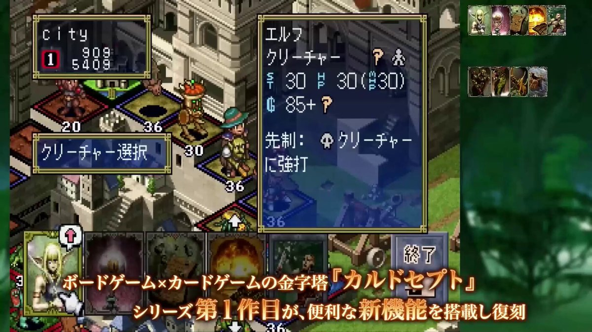
テスラさんがリポスト
『お前がやってる、日本で迷惑行為をしてる外国人を非難する投稿は、日本人の外国人嫌いを助長してるだけだ』と言われたけど、同じ外国人だからこそ非難しています。日本のマナー、ルールを大切にしてる、日本人の方と同様の感情を持っている外国人がいると知ってもらうことに意味があると思うから。
ビジュアルアーツ、不正アクセス被害に遭う。新作ゲームのデータのみならず社員や公式通販サイト利用者などの個人情報も漏洩した可能性
https://
gamespark.jp/article/2026/0
6/04/167368.html?utm_source=twitter&utm_medium=social&utm_content=tweet
…
守るべきラインが多すぎる！戦略SLG『ブリガンダイン アビス』は防衛戦も恋のための金策も忙しい【先行体験レポ】
https://
gamespark.jp/article/2026/0
6/04/167367.html?utm_source=twitter&utm_medium=social&utm_content=tweet
…
ストーリーモード「スカーレットウィル」とミッションモード「ブリガンド」をプレイしました！シナリオの温度差がすごい……！！
ITmedia NEWSさんがリポスト
人型ロボブームを“先駆者ホンダ”はどう見る？ 「悔しさもあるが……」 次の一手を聞いた
人型ロボブームを“先駆者ホンダ”はどう見る？ 「悔しさもあるが……」 次の一手を聞いた
6月5日（金）20時より、WEBラジオ番組
『セカラジ#66』プレミア公開
パーソナリティに野口瑠璃子さんと礒部花凜さんが出演
ぜひご覧ください
配信はこちら
https://
youtu.be/_nwKO54WliI
#プロセカ #セカラジ
「ワールドウォー D-デイ 1944」Switch向けに配信開始。ノルマンディー上陸作戦と空挺部隊の戦いを描くシングルプレイFPS
https://
4gamer.net/s/G101272.2606
04006
…
激しい銃撃戦の様子などを確認可できる最新トレイラーを公開中
▼▼番組の視聴はこちらから▼▼
https://
youtube.com/live/DtiaCWBvs
fY
…
キャンペーン参加規約（必読）
https://
wfs.games/campaign/colla
b_live_countdown_part2.html
…
ライトフライヤースタジオ × Key が贈るドラマチックRPG『ヘブンバーンズレッド』の公式情報番組です。【出演】メインMC：...
youtube.com
※応募時は手順の（1）（2）（3）すべてを行う必要があります
※抽選作業は応募〆切後に行います。その後は，4Gamerを運営するAetas株式会社が管理するフォームにて，当選者の発送先情報を登録して頂いた後，賞品を発送します。成りすましアカウントにはご注意ください
【いいね＆引用リポストの手順】
1，ポスト下部の「いいね」ボタンをタップ
2，「リポスト」ボタンをタップ
3，「引用する」をタップ
4，コメント欄にあなたの思いを綴ってください
ファーストパーソンADV「Odd Town」をアナウンス。レトロ調ビジュアルで描かれた奇妙な町で，犯罪や労働，住民との交流を通じて巨大な陰謀に迫る
https://
4gamer.net/s/G101273.2606
04008
…
昼夜のサイクルと，プレイヤーの行動に応じて変化するダイナミックな世界が導入されている。Steamで体験版を配信中
／
毎月"4日"は4Gamerプレゼントの日！
今回は「XENEON EDGE 14.5 インチ LCD タッチスクリーン」（ブラック）を抽選で1名様にプレゼント
＼
「ファイアーエムブレム ヒーローズ」に双界英雄のアルム，ミカヤ，救世英雄のレーギャルンが登場。6月5日に始まる記念召喚の詳細が解禁
https://
4gamer.net/s/G036904.2606
04004
…
アルムはエリウッドと，ミカヤはカミラとそれぞれペアを組み参戦する
本日20時~ ヘブバン情報局Vol.119！
#ヘブバンペルソナ５ザロイヤルコラボ
第二弾情報を発表
ゲストに茅森月歌役 #楠木ともり さんが出演！
8月までのアップデートロードマップも解禁！
お見逃しなく
投稿をRPで抽選で1名にAmazonギフトコード
巨人・阿部前監督、児相の「長女との通話録音メモ」の内容が流出して終わる #炎上
巨人・阿部前監督、児相の「長女との通話録音メモ」の内容が流出して終わる - オレ的ゲーム速報@刃の記事ページ
jin115.com
レトロRPG風マンション経営ADV「マンションダンジョン」発表。オンボロマンションで暮らす魔族たちと交流しよう
https://
4gamer.net/s/G101270.2606
04002
…
中古のゲームを起動した主人公の前に現れたのは，オンボロマンションと個性豊かな魔族たちだ。主人公はマンションの管理人として，彼らと1年間を過ごす
謎のディスプレイブランド「AMZFAST」は，若きゲーマーが作ったブランドだった。安さと異例の「5年保証」で日本市場に挑む
https://
4gamer.net/s/G101195.2606
03078
…
「より多くのゲーマーが手に取りやすい価格」に重点を置いた新興ブランドについて，中の人に聞いてみた
野村絢氏らアクティビスト、鉄道株に的 保有不動産に比べ割安
https://
nikkei.com/article/DGXZQO
UB025CX0S6A600C2000000/?n_cid=SNSTW005&n_tw=1780537464
…
野村氏は物言う株主として知られる村上世彰氏の長女です。今後、アクティビストの株保有割合が増えるなどすれば業界再編につながる可能性もあります。
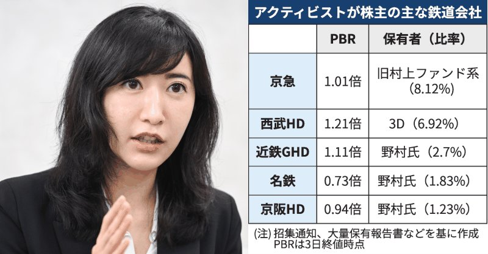
学園アイドルマスター【公式】さんがリポスト
【 #初星学園アイドル科の生徒に聞きました 】
紫雲清夏さんから、H.I.F出場にあたりコメントをいただきました！
App Store:「H.I.F出場に向けて、一言お願いします」
清夏:「今のあたしたちなら、ぜったい負けないって思えるんだ！ じゃあ、約束のステージへ、れっつご～！」
#学マス
学園アイドルマスター【公式】さんがリポスト
【 #初星学園アイドル科の生徒に聞きました 】
葛城リーリヤさんから、H.I.F出場にあたりコメントをいただきました！
App Store:「H.I.F出場に向けて、一言お願いします」
リーリヤ:「いつかと言っていた約束は、もう目の前です。皆さんの応援のおかげで、わたしたちは前に進んでいます……！」
学園アイドルマスター【公式】さんがリポスト
【 #初星学園アイドル科の生徒に聞きました 】
いよいよ明日、『H.I.F編』の新シナリオが追加される #学マス 。
葛城リーリヤ、紫雲清夏の2人に、意気込みのコメントをもらいましたよ
今すぐチェック
waifuな買い切り美少女FPS「WTF - Waifu Tactical Force」を開発陣と一緒に体験。Steamプレイテストが6月4日スタート
https://
4gamer.net/s/G091902.2606
03054
…
買い切りタイトルとして開発中。タイタンフォール的にメカを召喚する機能や，Risk of Rain 2に影響を受けたPvEなども準備中
ダイソーの100円グッズ好きの部屋→入ったら…… まさかの光景に「信じられない」「こんなにあったのか」と160万表示 （1/2） | ゲーム ねとらぼ
懐かしの「100円PCゲーム」をコンプした人
ダイソーの100円グッズ好きの部屋→入ったら…… まさかの光景に「信じられない」「こんなにあったのか」と160万表示
（記事URLはリプから）
「リミットゼロブレイカーズ」，Steam版クローズドβテストを体験できる参加者を追加募集
https://
4gamer.net/s/G073839.2606
03044
…
クローズドβテスト期間中にはVTuberの生配信も実施される。6月14日は小雀ととさんが，6月15日は或世イヌさんと心白てとさんが担当する
ヘブンバーンズレッド公式さんがリポスト
舞台『ヘブンバーンズレッド』
Blu-ray発売まであと5日
#東城つかさ 役の #星波 さんの
お写真でカウントダウン
Blu-rayご予約受付中▼
https://
officeendless.com/sp/hbr_stage/b
lu-ray/
…
#舞台ヘブバン #ヘブバン
テスラさんがリポスト
ポン☆潤々さんがリポスト
【315プロNight!】#SideM #315ナイト
／
5/29(金)放送回
”チラ見せ聞かせ”動画公開
＼
パーソナリティ
濱健人さん
狩野翔さん
寺島惇太さん
本編タイムシフトはこちら
https://
live.nicovideo.jp/watch/lv350348
227
…
ポン☆潤々さんがリポスト
商品情報
6月12日(金)発売
#WSブラウ
ブースターパック『Fate/strange Fake』
に収録される
“ハルリ・ボルザーク”
“フィリア”
のカードを公開
明日の公開もお楽しみに
商品詳細はコチラ
https://
ws-blau.com/item/fsf_01b/
#strangefake #ストレンジフェイク
さたけさんがリポスト
イベント・グッズ情報
メディコス限定イラスト公開
平成風制服がテーマの新規描き下ろし
こちらのイラストを使用した新商品を
POP UP SHOPで発売決定
7月2日(木)～7月15日(水)
MEDICOS SHOP新宿
໒꒱詳細はこちら：
https://
otonarino-tenshisama.jp/?post_type=new
s&p=3210
…
#お隣の天使様
／
#シャインポスト × タワーレコード
いよいよ明日6月5日（金）より開催
＼
タワーレコード新宿店と通販で新商品発売です！
▼販売商品など詳しくはこちらのサイトをチェック
https://
the-chara.com/blog/?p=114234
THEキャラ@公式
@thechara_2014
⋆⋅☆⋅⋆ ──────────── ⋆⋅☆⋅⋆
#シャインポスト × タワーレコード
開催が決定
⋆⋅☆⋅⋆ ──────────── ⋆⋅☆⋅⋆
シャインポストの聖地、タワーレコード新宿店にて新商品を発売します
同時通販も実施するのでお見逃しなく！
ポン☆潤々さんがリポスト
【コラボ情報】
─────────
お仕事のご連絡
─────────
伊集院北斗、鷹城恭二、黒野玄武、硲道夫、天峰秀が
「TUfave」のアンバサダーに就任
明日6/5(金)より
コラボジュエリー販売＆POPUP STORE開催
HP：
https://
tufave.com/collections/si
dem
…
#315お仕事報告 お待ちしています！
演劇リーグ：TRIPLE CAST
第30回演劇リーグ：TRIPLE CAST開催中です
今回の楽曲は、
「夏の夜空に光る雪」になります
開催期間は6/13(土)24時までになります
#ユメステ #ワーダイ #ワールドダイスター
フェローテック株価急反発 業績上振れ期待、アナリスト説明会高評価
フェローテック株価急反発 業績上振れ期待、アナリスト説明会高評価
日経平均1300円安、急上昇のスピード調整 米ブロードコム決算が冷や水
日経平均1300円安、急上昇のスピード調整 米ブロードコム決算が冷や水
昨夜試しにGemma 4 12B GGUFダウンロードしてOllamaで試したけど日本語がなんか変だった
日本、フィリピンと海洋境界の画定交渉へ 中国・台湾の反発の理由は
日本、フィリピンと海洋境界の画定交渉へ 中国・台湾の反発の理由は
外国人のマンション規制踏み込まず 政府・自民、実態把握を優先
外国人のマンション規制踏み込まず 政府・自民、実態把握を優先
スマホより軽い、わずか142g。“常に携帯したい”ほど気に入った登山スペックの日傘
スマホより軽い、わずか142g。“常に携帯したい”ほど気に入った登山スペックの日傘 | ギズモード・ジャパン
ポン☆潤々さんがリポスト
◤ヴァイスシュヴァルツ 今日のカード◢
6月26日(金)発売
ブースターパック グランブルーファンタジー
ノーマルカードを公開！
商品情報はこちら！
https://
ws-tcg.com/products/gbf_b
p/
…
#グラブル #WS
ポン☆潤々さんがリポスト
◤#ヴァイスシュヴァルツ今日のカード◢
6月26日(金)発売
ブースターパック グランブルーファンタジー
パラレルカードを公開！
商品情報はこちら！
https://
ws-tcg.com/products/gbf_b
p/
…
#グラブル #WS
情弱の民 貧乏節約術を学ぶ為に52万円払ってしまう
情弱の民 貧乏節約術を学ぶ為に52万円払ってしまう : ハムスター速報
韓国発の新作むちむちセクシー美少女収集型RPG「メイクドラマ：MAD」，韓国でAndroid版の正式サービスを開始
https://
4gamer.net/s/G100067.2606
04005
…
日本を含むグローバル展開については検討中だが，作品のキャラクターボイスは日本語で収録されている
【ご報告】JAIRO Cloudの一連のサービス停止について
https://
nii-auth.atlassian.net/wiki/spaces/JA
IROCloudWEKO3/pages/43553760/JAIRO+Cloud
…
サプリ製造に共通ルール、記録保存で安全担保 市場拡大で義務付け
サプリ製造に共通ルール、記録保存で安全担保 市場拡大で義務付け
ヤマダHDとエディオン、経営統合を検討中 「明日の取締役会で決議する」
ヤマダHDとエディオン、経営統合を検討中 「明日の取締役会で決議する」
日本のAI戦略、初動は良さげだったのに、「序盤で超巨大資本を入れない」という大失点で、もはやどうリカバリするか悩ましい感じになってる感。
Torishima / INTPさんがリポスト
OpenAIがリセット制限に対してそんなに寛大になったと思いますか、それとも単一のボタンを押すだけで済むようになっていると思いますか、それともまだ誰かが従わなければならない多段階のSOP（標準作業手順）のようなものだと思いますか？
【ヤバイ】工場にクマが侵入、麻酔銃使用が許可される→撃ち込んだ結果、まさかすぎる事態に… #雑談・その他の話
【ヤバイ】工場にクマが侵入、麻酔銃使用が許可される→撃ち込んだ結果、まさかすぎる事態に… - オレ的ゲーム速報@刃の記事ページ
jin115.com
「省ナフサ」おむつ原料、でんぷん使い開発 長瀬産業が供給不足対策
https://
nikkei.com/article/DGXZQO
UC012JC0R00C26A6000000/?n_cid=SNSTW005&n_tw=1780532404
…
紙おむつや生理用ナプキンなどに欠かせない吸収材を開発しました。
でんぷんの分子構造を変え、ナフサ由来の製品並みの吸水性を実現。環境負荷が低いのが特徴です。
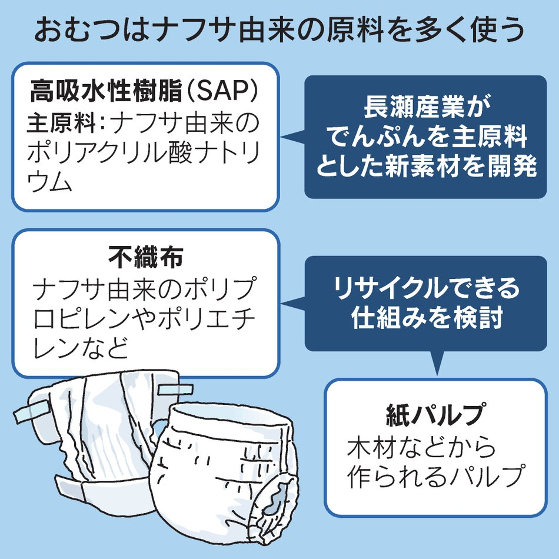
円相場再び160円台 介入懸念がさらなる円売り促す皮肉
円相場再び160円台 介入懸念がさらなる円売り促す皮肉
『PUBG』生んだクリエイターのスタジオが資金難に。早期アクセス中の新作は開発中止・無料化へ―ブレンダン・グリーン氏が組織再編を発表
https://
gamespark.jp/article/2026/0
6/04/167365.html?utm_source=twitter&utm_medium=social&utm_content=tweet
…
住友商事、もみ殻の地中埋蔵でCO2除去 米新興グラファイトに出資
住友商事、もみ殻の地中埋蔵でCO2除去 米新興グラファイトに出資
働く高齢者も報酬重視 タイミー登録２倍、シルバー人材センターは減
働く高齢者も報酬重視 タイミー登録2倍、シルバー人材センターは減
16.1倍か、そりゃ当たらんわ
豪華メンバー集う宝塚記念 指定席倍率は最大「356.0倍」
豪華メンバー集う宝塚記念 指定席倍率は最大「356.0倍」 | 競馬ニュース - netkeiba
真空管タイプとなると真空で高耐圧？となるけど、意外と真空は絶縁破壊しやすい、ダイヤモンドで固体でバンドギャップの大きいデバイスが見えてて効果ある？と、放射線耐性も、ロジック作れないよね？とか、ピンポイントに使えるが、一点物なら別手段が取りうるやつ、でしょうね。
遊技機のダイコク電機、抹茶事業に参入 子会社で栽培ノウハウ蓄積
遊技機のダイコク電機、抹茶事業に参入 子会社で栽培ノウハウ蓄積
I'm at 鹿角市十和田大湯下草木 in 鹿角市, 秋田県
https://
app.foursquare.com/share/checkin/
6a20e113cbbbb8114cbddc3f?s=Y8pUvUqOOL3YbbXVj5xttLPPVVc&lang=en
…
嫌なトップランナーだな・・・。
World of Statistics
@stats_feed
日本は、ヒトに対するクマの攻撃件数で世界をリードしています。
ドコモショップ、最寄り二店舗とも終日予約でいっぱいで…とか言われて対応できないらしいので愛想がつきそう（11年使ってるけどMNP予約番号発行した）
佐賀県警DNA鑑定不正、239件に拡大 37件は「容疑者特定の可能性」
佐賀県警DNA鑑定不正、239件に拡大 37件は「容疑者特定の可能性」
商船三井が米洋上LNGプラント出資 日系海運大手初、上流拡大へ480億円
商船三井が米洋上LNGプラント出資 日系海運大手初、上流拡大へ480億円
「ヤマダHD・エディオン統合へ 持ち株会社検討、2.5兆円家電連合」の英文記事をNikkei Asia
@NikkeiAsia
に掲載しています。
Japan electronics sellers Yamada, Edion plan merger to create industry giant
Japan electronics sellers Yamada, Edion plan merger to create industry giant
涼しいサイズ、強いノイキャン、ハイレゾ対応。Marshall Milton A.N.C.は理想型の1つ
涼しいサイズ、強いノイキャン、ハイレゾ対応。Marshall Milton A.N.C.は理想型の1つ | ギズモード・ジャパン
小旅行の荷造り、これくらいが丁度いい。14インチのPCも1泊分の服もきれいに並ぶよ #BuyPR
小旅行の荷造り、これくらいが丁度いい。14インチのPCも1泊分の服もきれいに並ぶよ | ギズモード・ジャパン
外骨格が街で使われる。上場したら補助金吸い上げの箱でしかなかったサイバーダインの最初の登場でみんなが見た夢、なのかな。プラシーボ効果があるのかな、使ってるうちにネイティブ筋肉能力を上げ補助を下げる機能が入ってたりするのかな。
カソード電極のバックに加圧する電圧で放出電子量を制御してカソード-アノード構造で3極相当の構造にしてると。昔NEAとか負の電子親和力とか、懐かしい系を思い出しますね。
FabScene（ファブシーン）
@FabSceneJp
チップ上で動く微小な真空管を開発、論理ゲートの構成にも成功
https://
fabscene.com/new/news/cmvet
-vacuum-tube-chip-circuit/
…
Torishima / INTPさんがリポスト
【重要なお知らせ】
この度、弊社において個人情報が漏えいした可能性のある事案が発生いたしました。
お客様をはじめ、関係者の皆様に多大なるご心配とご迷惑をおかけしておりますこと、深くお詫び申し上げます。
「バニーガーデン2」，DLC第3弾を配信開始。花奈，凜，美羽香，英梨紗，黒音，瑠那の新たなカラオケ楽曲を追加
https://
4gamer.net/s/G098647.2606
04003
…
DLCで追加される特別衣装をまとったキャストたちが，新曲を披露するPVも公開中
米ブロードコム株価が急落 ＡＩ半導体の売上高見通し維持で
米ブロードコム株価が急落 AI半導体の売上高見通し維持で
Torishima / INTPさんがリポスト
＜梅雨入り発表＞
今日6月4日(木)、気象台は九州北部地方（山口県を含む）と中国地方、近畿地方の梅雨入りを発表しました。
各地域、平年と同時期で、昨年より2週間以上遅い雨の季節の始まりです。
https://
weathernews.jp/news/202606/04
0111/
…
KAGRAの見学は、抽選当たらず、でした。
最近の迷惑メールは、
「今すぐ払わないと大変なことになりますよ！」
ではなく、
「今すぐアクセスして情報打ち込まないと、もらえるはずのお金（やポイント）を失うことになりますよ！」
なのね。
ストップ詐欺被害。
自転車で歩行者をはねて意識不明にさせた高校生、自転車乗りとして最悪の供述・・・・・・ #酷い話・事件
自転車で歩行者をはねて意識不明にさせた高校生、自転車乗りとして最悪の供述・・・・・・ - オレ的ゲーム速報@刃の記事ページ
jin115.com
AI構文
本質をついています→ただし→重要なのは→ここを見誤ると→私なら→箇条書き→まとめ→ご要望なら
Torishima / INTPさんがリポスト
【梅雨の時期に関する近畿地方気象情報】
近畿地方は梅雨入りしたと見られます。
男色ディーノのゲイムヒヒョー ゼロ：第892回「私は愛を知りました」
https://
4gamer.net/s/G004083.2606
02037
…
今週は健気な犬の冒険を描く「My Little Puppy」を取り上げます。以前も気になるゲイムとして紹介していますが，愛犬ハクのために戦い続けるディーノ選手はどんな感想を抱いたのでしょうか
開始5日で障害、気象庁「線状降水帯直前予測」復旧 ソフトウェア不具合が原因
開始5日で障害、気象庁「線状降水帯直前予測」復旧 ソフトウェア不具合が原因
いつもの否定も肯定もしない定型文かと思ったら認めていた
Microsoftイベントで反AI抗議 ナデラCEO「テックで課題解決」と配慮
Microsoftイベントで反AI抗議 ナデラCEO「テックで課題解決」と配慮
インスタもFacebookもMessengerも。Metaが未成年の安全対策強化
インスタもFacebookもMessengerも。Metaが未成年の安全対策強化 | ギズモード・ジャパン
身につけながら、少しずつ読み解いていく。ダ・ヴィンチに着想を得た自動巻き時計「VIXA Da Vinci Series」 #BuyPR
身につけながら、少しずつ読み解いていく。ダ・ヴィンチに着想を得た自動巻き時計「VIXA Da Vinci Series」 | ギズモード・ジャパン
リメイク『トゥームレイダー：レガシー・オブ・アトランティス』SteamストアページにAI使用が明記。パブリッシャーは「生成AIに非常に期待を寄せている」と語る
https://
gamespark.jp/article/2026/0
6/04/167364.html?utm_source=twitter&utm_medium=social&utm_content=tweet
…
Torishima / INTPさんがリポスト
いつものCodexレートリミットリセット定期
Tibo
@thsottiaux
こんにちは。過去24時間で、Codexの信頼性に影響を与えた3つの別々の小さなインシデントが発生しました。それらは3つも多すぎるものであり、それらが再発しないよう積極的な対策を講じています。
Codexの全有料プランにおける使用制限をリセットしました。トークンが再び流れることを願います。
これガチで懺悔ポストなんだけど・・・
前にXサブスク作ってみよっかなと軽い気持ちでポストしてたんだけど
一応、あの時作ったには作ったんよね
ただ作ったけど、対価もらう以上しっかりしたもの作らなきゃだよなぁ、と色々考えた末に萎縮してしまって放置してたんだけど
ハム速
@hamusoku
ニコニコのサブスク価格で思いだしたけど
前からワイも１００円ぐらいで表で出せない記事とかクソスレまとめるだけのXサブスク作りたいなぁとは思ってたんだよな x.com/hamusoku/statu…
東京、10年ぶりに出生数が増加！都知事「施策の成果が上がった(ﾄﾞﾔｧ)」 #炎上
東京、10年ぶりに出生数が増加！都知事「施策の成果が上がった(ﾄﾞﾔｧ)」 - オレ的ゲーム速報@刃の記事ページ
jin115.com
そのパラドックスは確かに深刻。
ch468
@ch468
本来ならば20世紀の覇権主義的な国に対し民主主義国家は連携して対峙すべきなのに、民主主義がゆえに有権者が現職叩きで国のトップをころころ代えてしまうパラドックス。
さらに長期政権になりやすい覇権主義国がネット経由の情報戦で民主主義国の選挙に介入する不利な構図になっていないか。
野村絢氏、テレビ朝日HDの第8位株主 1.86%の取得判明
野村絢氏、テレビ朝日HDの第8位株主 1.86%の取得判明
ITmedia NEWSさんがリポスト
「Gemma 4 12B」登場 メモリ16GBのノートPCでも動作するマルチモーダルモデル
「Gemma 4 12B」登場 メモリ16GBのノートPCでも動作するマルチモーダルモデル
日本政府、AI「Mythos」アクセス権を取得 サイバー防衛強化に活用
日本政府、AI「Mythos」アクセス権を取得 サイバー防衛強化に活用
ヤマダ・エディオン統合、家電量販「１強時代」 小売りがメーカーに
ヤマダ・エディオン統合、家電量販「1強時代」 小売りがメーカーに
I'm at 錦木塚 in 鹿角市, 秋田県
https://
app.foursquare.com/share/checkin/
6a20d5d8930f1a04bd20ee1c?s=KU6LzNc6O-2LNcgZYyjhclefL98&lang=en
…
佐々木俊尚＠新著「フラット登山 日本を歩く旅60」7月8日刊行！さんがリポスト
本来ならば20世紀の覇権主義的な国に対し民主主義国家は連携して対峙すべきなのに、民主主義がゆえに有権者が現職叩きで国のトップをころころ代えてしまうパラドックス。
さらに長期政権になりやすい覇権主義国がネット経由の情報戦で民主主義国の選挙に介入する不利な構図になっていないか。
ポン☆潤々さんがリポスト
いけます
ダブル爆発いけます
ヤマダＨＤ株価が一時８年ぶり高値 「エディオンと経営統合」報道
ヤマダHD株価が一時8年ぶり高値 「エディオンと経営統合」報道
日本経済新聞 電子版（日経電子版）さんがリポスト
仕事中に「ムダ・非効率感じる」社会人の8割 民間調べ
仕事中に「ムダ・非効率感じる」社会人の8割 民間調べ
「雄叫び：ミニオン1体の種族を「すべて」に変える」って、グレード5のミニオン欲しい。
#HSBG #バトグラ
つば二郎@きいちゃんすこすこ侍さんがリポスト
REALORIAさんに自分の半生を半日かけてじっくりインタビューしてもらったんです。Xでは子供のことばかり呟いてますが、自分のことはあまりつぶやかずで。第三者から私を見てもらうとこうなのかぁー！と。お時間ある時に読んでいただけましたら。
幼少期の舞台経験、声の仕事での葛藤、母の死を経て、ミルノ純さんは会社経営と表現活動の両方を続けている。流れの中で選び、頼り、しなやかに立ち続ける生き方をたどるインタビュー
realoria.jp
【本日終了】人気漫画『てーきゅう』 『ルパン三世Y』 『バリスタ』などが「全巻33円」で買えるKindle本激安セールは今日まで！！ #漫画・アニメ等
【本日終了】人気漫画『てーきゅう』 『ルパン三世Y』 『バリスタ』などが「全巻33円」で買えるKindle本激安セールは今日まで！！ - オレ的ゲーム速報@刃の記事ページ
jin115.com
テスラさんがリポスト
むしろThaKIZAKIさんとは色々と協力したり、企画したりしてるのに、誰ですかそんな噂流してる人。
今までとは確かに勝手は違うかもしれませんし、入口がオタクの人じゃないとはいえ、あのキャンプ場のファンで、木崎湖の風景を守ろうという気持ちは僕らと同じ本物なので、そこは理解してほしいです。
なんか動作がおかしいという話があるし、google/gemma-4-12B-it の方が若いので、もうちょっと待とう
Unsloth AI
@UnslothAI
Gemma 4 12B は、Dynamic GGUFs を通じて、わずか 8GB RAM でローカル実行が可能になりました。
Google の新モデル、Gemma 4 12B Unified は、画像、オーディオ、256K コンテキストをサポートします。
Unsloth Studio を通じて、このモデルを実行およびトレーニングできます。
GGUF:
カプコンの名作『ファイナルファイト』を、任天堂の名機『ニンテンドー64』へ勝手移植するプロジェクトが始動!!
N64は他機種と比べ自作ソフトそのものが少なく、この時点でかなり珍しい上に、題材は『ファイナルファイト』で、更にに勝手移植ときた
これは見逃せないッッ!!
https://
youtube.com/watch?v=ZhoNU8
9rB1A&t=
…
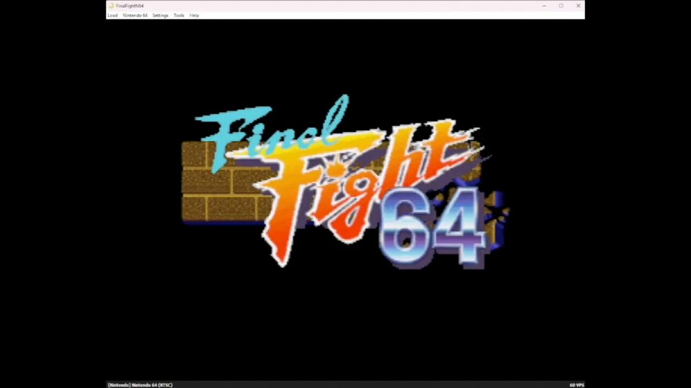
Bangさんがリポスト
ご存じですか？
ウインナーコーヒーのこと…
はるばーど屋@カス嘘③4/23発売
@Circle_Halberd
【『カスの嘘』最新話公開】
『ダウナー系お姉さんに毎日カスの嘘を流し込まれる話』第19話が公開されました！
お姉さんの職場に潜入する少年！
まだ知らないお姉さんの一面を覗き見ることに…
▼WebComicアパンダ（カドコミ）
https://
comic-walker.com/detail/KC_0058
30_S/episodes/KC_0058300004700011_E
…
▼ニコニコ漫画
https://
sp.manga.nicovideo.jp/watch/mg1054963
Google、AI検索への表示を拒否できるWebオーナー向けトグル機能のテスト開始
Google、AI検索への表示を拒否できるWebオーナー向けトグル機能のテスト開始
海外ゲームメディアが『ゲーム業界は高齢ゲーマー市場を見落としている』という、まるで我々に宛てたような記事を公開!!
I'm at 小坂PA (上り) in 小坂町, 秋田県
https://
app.foursquare.com/share/checkin/
6a20cfa2d99c0d4a193e6365?s=Ql4R7yU-vfx6NFsjG4P2Xv5FVyw&lang=en
…
永瀬アンナさんがリポスト
◥◣ 映画『#スーパーガール』 ◢◤
キャラクターポスター5種解禁
￣￣￣￣￣￣￣￣￣￣￣￣￣￣￣￣
◆スーパーガール／#ミリー・オールコック
◆ロボ／#ジェイソン・モモア
◆クリプト
◆ルーシー／#イヴ・リドリー
◆クレム／#マティアス・スーナールツ
6.26 FRI #この夏はスーパーガール
Torishima / INTPさんがリポスト
みたいな⋯返事をするAIは、ブルシットAIだと思うで。タスクフォース検証委員会をたちあげても、事業はたいしてドライブしない
電車ユーザー「電車の席こっちの方がよくない？いつも目のやり場に困って辛い」→28万いいね #雑談・その他の話
電車ユーザー「電車の席こっちの方がよくない？いつも目のやり場に困って辛い」→28万いいね - オレ的ゲーム速報@刃の記事ページ
jin115.com
メインキャラ全員「くにお」！「西遊記」モチーフでシリーズ初のローグライトアクション『くにおくんの熱血西遊記 天竺乱闘編』配信開始
https://
gamespark.jp/article/2026/0
6/04/167363.html?utm_source=twitter&utm_medium=social&utm_content=tweet
…
https://
x.com/i/status/20598
90769524375972/video/1
…

学園アイドルマスター【公式】さんがリポスト
／
COCOストア
＼
『学園アイドルマスター』より「藤田ことね」がRe;IRIS Ver.で1/7フィギュア化！
#花海咲季、#月村手毬、#藤田ことね の1/7フィギュア3種すべて購入すると、ディスプレイマットがついてくる
☆完全受注生産☆
予約締切：9/10→
https://
coco-store.jp/products/96
#学マス #デザインココ
永瀬アンナさんがリポスト
この夏、スーパーガールが、ぶちかます。
映画『#スーパーガール』
超絶アクション満載の特別映像解禁
#この夏はスーパーガール
𝟲月𝟮𝟲日(金) 日米同時公開
日経平均株価、反落し一時1000円安 米株安が重荷
4日前場寄り付きの東京株式市場で日経平均株価は反落で始まり、前日に比べ1000円あまり安い6万7300円台前半まで下げる場面があった。中東情勢の不透明感を背景に3日の米株式市場で主要3指数が下落した流れを引き継ぎ、幅広い銘柄に売りが先行した。米半導体ブロードコムが米国時間3日夕の時間外取引で急落したことも重荷となっている。ブロードコムが3日発表した2026年2〜4月期決算は、売上高と純利益が事
nikkei.com
韓国地方選、与党が主要16首長選で12勝 ソウルは開票続く
韓国地方選、与党が主要16首長選で12勝 ソウルは開票続く
Torishima / INTPさんがリポスト
かなり本質をついていますね。ただし、実証をしない言い切りは危険です。検証すべきは、以下の3つを分析するタスクフォース委員会の立ち上げです。ここをしっかり抑えないと、AIの導入の方向性が大きく歪みます。
Sharaku Satoh
@sharakus
「ブルシットAIユーザー」や「ブルシットAIツール」「ブルシットAIコンサル」はあるかもしれませんが、人によってはGPT-4でも生産性を向上させられるので「ブルシットAI」は存在しないと思います。知能は使い方次第。 x.com/fladdict/statu…
貝さんさんさんがリポスト
らくがき
Haruhiko Okumuraさんがリポスト
GPT-5.5（現在、誰でも利用可能なもの）は、sum-product予想を反証することもできます：
https://
chatgpt.com/share/6a187d12
-7d58-83e8-87bd-0ee312378028
…。以前にこれを明かさなかったのは、これらの新しい能力をコミュニティが吸収する時間を与えるのが良いと考えたからです。特に、この驚くべきブレークスルーの発見に関わった人間たちは、
CRYSTALiA公式さんがリポスト
【ご予約受付中！】
駿河屋通販で超大好評予約受付中な『ディメンション凸ラバース!! 通常版（
@CRYSTALiA_AC
）』ですが、もちろん当店でもご予約受付可能になっております！
『駿河屋 SPECiAL EDITION』はすいちゃんのタペを含む3大特典、通常の店舗特典付商品は2大特典（色紙＆パネル）となります！
駿河屋 成年向けPCソフト 店舗特典情報【公式】
@SurugayaAPC
＼受注再開！／
大好評につき二次受注分も完売状態でした『ディメンション凸ラバース!! 通常版（@CRYSTALiA_AC）』の3大店舗特典付商品である「駿河屋 SPECiAL EDITION」の「三次受注」を開始させて頂きました！ この夏『#とつラバ』のプレイはいかが？
※入荷次第順次出荷となります（7月17日頃見込）
https://
pic.x.com/cmUDcWcvx8
生活保護が大ブームに ナマポ民「働けるけど、労働のキツさと給料見たら割に合わない。月13万で充分なのよ。なので生活保護でまったり生活してます」
生活保護が大ブームに ナマポ民「働けるけど、労働のキツさと給料見たら割に合わない。月13万で充分なのよ。なので生活保護でまったり生活してます」 : ハムスター速報
日本人、食品や日用品などの値上げについて「何もかも値上げしているから仕方ない」と諦め始める #政治
日本人、食品や日用品などの値上げについて「何もかも値上げしているから仕方ない」と諦め始める - オレ的ゲーム速報@刃の記事ページ
jin115.com
Torishima / INTPさんがリポスト
現在のOpenAIは、CodexがClaude codeのお株を奪って、なんなら本体のChatGPTよりもコーディング意外の生産用途全体で優れるくらい伸びたことを契機に、明確にこちらを事業の核にしようとしているという報道があり、「スーパーアプリ」と呼ぶものの開発と組織再編を行なっている模様。
濱口竜介監督がカンヌで語った映画哲学
https://
nikkei.com/article/DGXZQO
UD22BCA0S6A520C2000000/?n_cid=SNSTW005&n_tw=1780496158
…
映画製作哲学の核に据えてきたのは「偶然を捉える」こと。カンヌ国際映画祭で女優賞を受けた新作「急に具合が悪くなる」を手掛けたのも「偶然」を巡る議論が決め手でした。
濱口竜介監督がカンヌで語った「偶然」 映画も世界も人生も
でなー
Torishima / INTPさんがリポスト
トークンをひたすら燃やして、事業成長に1mmも貢献しない価値提供の薄いAIを「ブルシットAI」と呼ぶべきではないか。
出生率（人口千対）は5.6、合計特殊出生率は1.14（1.14%ではない）
https://
mhlw.go.jp/toukei/saikin/
hw/jinkou/geppo/nengai25/dl/kekka.pdf
…
産経ニュース
@Sankei_news
出生率1・14％、過去最低を更新 出生数67万人 令和7年人口動態統計
https://
sankei.com/article/202606
03-YKZ2PNUHF5MFHKV22KNXRUIWYE/
…
厚生労働省は3日、令和7年の人口動態統計（概数）を発表した。1年間に生まれた日本人のみの子供の数（出生数）は前年比1万4937人減の67万1236人となり過去最少となった。
Haruhiko Okumuraさんがリポスト
Grokに戒名作ってもらった。もうこれでいいや、って遺言に書いておこうかな。これですむなら住職はAIで大打撃だな。
ーーーーーーーーーー
私の戒名を作って
あなたの戒名を作ってみました！
**野尻抱介（尻P）さん** らしい、ちょっとSFチックでユーモアを交えた戒名を3パターン提案します。
Haruhiko Okumura
@h_okumura
私の戒名はAIに作ってもらおう。なんとか叡愛居士みたいな x.com/math26/status/…
日経平均、反落で始まる 米株安で売り先行
日経平均、反落で始まる 米株安で売り先行
Torishima / INTPさんがリポスト
OpenAIがここまで派手な映画風動画匂わせをやるのは結構珍しいので、近日中にCodex関連で大きなアップデートがあると期待。
現状、OpenAIはCodexを基盤に「スーパーアプリ」なるものを開発しているようなのでその進捗か、GPT-5.6か、何か別物か。

OpenAI
@OpenAI
飛ぶ時が来た。
国境の離島「高すぎる」住宅 移住はばむ
https://
nikkei.com/article/DGXZQO
JC157L90V10C26A4000000/?n_cid=SNSTW005&n_tw=1780529968
…
島根県・隠岐諸島の知夫村は費用面から村営アパートの建設を断念。人気の沖縄・宮古島は不動産の価格が高騰しています。
国境の離島を維持するのに欠かせない住まい確保が苦境に陥っています。
国境離島「高すぎる」住宅 コスト本土の1.5倍で建設断念、移住はばむ
店内白いのそういう理由だったのか…普通におしゃれだナーと思っていた。
三井物産の堀社長、AI活用で効率化「社員のアウトプット2倍に」
三井物産の堀社長、AI活用で効率化「社員のアウトプット2倍に」
ペットボトルで給水できるコードレス高圧洗浄機が優秀。ベランダ掃除も洗車も強力噴射でピカピカに #BuyPR
ペットボトルで給水できるコードレス高圧洗浄機が優秀。ベランダ掃除も洗車も強力噴射でピカピカに | ギズモード・ジャパン
ポン☆潤々さんがリポスト
当店はお餅が得意な菓子屋なので、支店の内装もお餅を思わせる装いになっています。
机は白くて丸いお餅を、床の線は焼き網をイメージしています。
3枚目の画像と店内をリンクさせた遊び心ですが、敷居を跨いだ人間を喰らうタイプの血鬼術や領域展開ともとれるので積極的にはアピールしていません。
海街@信州さんがリポスト
【逆に怖い】
W杯グループFの対戦国が直近の試合で敗戦
オランダ 0-1 アルジェリア
スウェーデン 1-3 ノルウェー
チュニジア 0-1 オーストリア
日本代表 1-0 アイスランド
【物議】114億円分の覚醒剤を密輸した容疑で逮捕されたネパール人、不起訴 フェンタニル密輸問題も併せて司法を疑う声が殺到 #炎上
【物議】114億円分の覚醒剤を密輸した容疑で逮捕されたネパール人、不起訴 フェンタニル密輸問題も併せて司法を疑う声が殺到 - オレ的ゲーム速報@刃の記事ページ
jin115.com
【繁殖不能の蚊6400万匹の放出申請】
Google、アメリカで感染症対策を実験
https://
nikkei.com/article/DGXZQO
SG02CI50S6A600C2000000/?n_cid=SNSTW005&n_tw=1780529140
…
アメリカでは近年、蚊が媒介する西ナイル熱やデング熱の流行が問題となっています。
計画では「ボルバキア」と呼ばれる細菌に感染し、繁殖能力を失った雄の蚊を使います。
Google、繁殖不能の蚊6400万匹の放出申請 米国で感染症対策を実験
古い居酒屋でおじいちゃん店主にオススメ品を聞いたら、「前は焼き鳥やってたんだけど1人になって大変だからやめちゃったの！前は….奥さんがいたからねぇ！」って悲しそうに遠くを見出して、こちらも『俺はオススメを聞いたんだが…』って遠くを見ました。もしかして思い出が1番のオススメなのかな。
スマホゲームのセルラン分析（2026年5月21日〜5月27日）。今週の1位は「モンスト」。1月〜3月に日本で1周年を迎えた主なタイトルも紹介
https://
4gamer.net/s/G023612.2606
01004
…
「七つの大罪 光と闇の交戦」は7周年イベント，「ドラゴンボール レジェンズ」は8周年イベントで収益を伸ばしている
I'm at JAL PLAZA in 青森市, 青森県
https://
app.foursquare.com/share/checkin/
6a20bf5ce7ddf43df0bbddfa?s=omb0kf1SVxqeGbqemJcJ7nF90Ng&lang=en
…
御翔印を購入してレンタカーでGO
沖縄でもデータセンターってあちこちにあるんではなかったかな？ #アップ738
I'm at 青森空港 in 青森市, 青森県
https://
app.foursquare.com/share/checkin/
6a20bcce6edcc320d2bb1e13?s=UPogyNEYpM1qK0dwocZ-OmZQJro&lang=en
…
ヤマダHD・エディオン統合「検討は事実」 5日の取締役会で決議
ヤマダHD・エディオン統合「検討は事実」 5日の取締役会で決議
モバプリさん、そのスーパーネタは松田しょうさんの持ちネタを侵略してる気がするw #アップ738
まずは南下して錦木塚へ。
軍手
@gunziotaku
錦木塚に伝わる伝説は非常に物悲しいものであって、原作のアサウラさんがどういう考えでこの地の伝説の名をヒロインに与えたかを見てこようと思います。 x.com/gunziotaku/sta…
あまり考えたことなかったけど確かに近いかも
＞ω＜さんがリポスト
外骨格ロボットでよく歩けるようになったおじいさんおばあさん。ハイアール製
Torishima / INTPさんがリポスト
Reve 2.0が突然、NanoBanana 2を抜いて2位に登場
https://
arena.ai/leaderboard/te
xt-to-image
…
湘南ペンギンさんがリポスト
ヤマダHD。エディオン。当社に関する一部報道について
「本日、日本経済新聞により、経営統合に関する報道がなされました が、当社が公表したものではありません。
なお、経営統合について検討していることは事実ですが、現時点で決定 している具体的な事項はありません。
1週間くらい調子が出ない
男鹿半島が見えてきた。もう高度下げてる。
日本経済新聞 電子版（日経電子版）さんがリポスト
Google､AI検索の引用を拒否可能に 世界で機能提供へ
Google､AI検索の引用を拒否可能に 世界で機能提供へ
日経平均株価、米株安と中東情勢の不透明感が重荷（先読み株式相場）
日経平均株価、米株安と中東情勢の不透明感が重荷（先読み株式相場）
撤去されたんじゃなくて普通の改札機にカメラがついたのか
【文春】高市陣営のネット工作疑惑、ついに『音声』公開 #炎上
【文春】高市陣営のネット工作疑惑、ついに『音声』公開 - オレ的ゲーム速報@刃の記事ページ
jin115.com
なるせひろのりさんがリポスト
とんでもないだろ、これ...
北村晴男氏「入管が参考人として呼んだ学者が『外国人比率が増えて困るなら、どんどん帰化させて日本人にすれば外国人比率が下がる』と言った」
北村氏「入管とは本来、国家を最も意識すべき機関」
ところがその指南役が「国籍は数合わせ」と言い放つ。

google/gemma-4-12B
https://
huggingface.co/google/gemma-4
-12B
… 10時間前
google/gemma-4-12B-it
https://
huggingface.co/google/gemma-4
-12B-it
… 2時間前
GGUFはもうちょっと待ったほうがいい？
google/gemma-4-12B · Hugging Face
【悲報】Z世代さん、上司に詰められ逆ギレ殺害→上司になりすましサラ金マネーで豪遊
■大和田和秀(26)容疑者
・勤務先の廃品回収会社で、上司かつ同級生である男性から注意を受ける
→逆上して上司を包丁で刺殺
・殺害後、上司の身分証を使い消費者金融で100万円を借りて豪遊
・金を使い切って自首
滝沢ガレソ
@tkzwgrs
【悲報】Z世代さん、ついにチャッピーを犯罪に利用し始める
■岡山県在住の20代男性会社員×2名
・無人の倉庫に侵入して車の鍵など3万円相当の物品を盗む
・「ChatGPTで誰も使ってなさそうな倉庫を調べた」と供述
・仕事だけでなく犯罪もAIで効率化する時代がついに到来か x.com/tkzwgrs/status…
日本語出せるのまじ？？？すごい
ちょっと前に「AI に書かせたコードを人間が読むか AI レビューに任せるか」論争あったけど、GOROman さんみたいな管理職経験ある人ほど（元々マネジメント側に移っていたから）コード見なくてええやろと言い、現役エンジニアほどしっかり読まないとダメだろ…と言っていた印象がなんとなくある
Torishima / INTP
@izutorishima
父親と度々 Codex とか AI エージェントのマネジメントに関する愚痴を相談したりしているが、別分野とはいえ技術系管理職目線だと驚くほど人間の部下のマネジメントと本質的に同じ問題ぽくて、管理職経験ある人ほどストレスなく的確に使いこなせるんだろうなあと思いました
なるせひろのりさんがリポスト
ルビオ米国務長官、天安門事件「検閲で記憶消せない」 37周年で声明
http://
reut.rs/4uaYz2Z
ルビオ米国務長官、天安門事件「検閲で記憶消せない」 37周年で声明
ピラミッドが何千年も地震に耐えられた理由
ピラミッドが何千年も地震に耐えられた理由 | ギズモード・ジャパン
炎天下で使うほど充電される。ソーラーパネル内蔵の腰掛けファンが合理的すぎる #BuyPR
炎天下で使うほど充電される。ソーラーパネル内蔵の腰掛けファンが合理的すぎる | ギズモード・ジャパン
うえぞうさんが本職では非エンジニアらしいの未だに信じられなさすぎる
うえぞう@うな技研代表
@uezochan
しかしあれだな、わたしのような非エンジニアのど素人でもものづくりできるようになったの本当にありがたいなAI様様ですわ
いるか@心が酒びたっているんださんがリポスト
中学生向けの講演に呼ばれた時の話。教師が「何喋っとるねんええ加減にせーや」と怒鳴っていた。生徒の顔が曇り、あまりにも最悪の雰囲気だったので・・
「今日は特別！みんなと一緒に楽しみたいから、隣の人と話をしながら聞いていいよ！その代わり『今聞いて！』と言ったら静かにしてね」
滋賀県彦根市で「ゴミ袋が買えない」と市民からの苦情が相次ぐ。そこで市役所が調べたところ、2025年の指定ゴミ袋の販売量850万枚と同じ量の供給量は確保していたことが判明。つまり買いだめする人が増えて足りなくなってるだけだった。去年のコメも今年のナフサも、「足りない」と大騒ぎになるのはだ
「ゴミ袋が買えない」苦情相次ぎ、市が調査…例年通り８５０万枚程度確保も「指定外袋」認める臨時措置（読売新聞オンライン） - Yahoo!ニュース
「ゴミ袋が買えない」苦情相次ぎ、市が調査…例年通り８５０万枚程度確保も「指定外袋」認める臨時措置（読売新聞オンライン） - Yahoo!ニュース
オタク起床
ウクライナは戦線の1万5000のドローン部隊からの映像を蓄積し、トータルで200万時間、年に直すとなんと228年分にもなる膨大な学習データを獲得した。これがウクライナが先行するAI戦争の非常に貴重な財産になっているという分析。まさにフィジカルAI。「200万時間は、実戦の戦闘映像として公に知られる
ウクライナのドローン戦は戦争の経済を変え、投資先は防衛大手でなくAIインフラだと示す | Forbes JAPAN 公式サイト（フォーブス ジャパン）
ウクライナのドローン戦は戦争の経済を変え、投資先は防衛大手でなくAIインフラだと示す | Forbes JAPAN 公式サイト（フォーブス ジャパン）
【兵庫県たつの市】
川で発見の遺体、母娘殺害で指名手配中の容疑者と特定 県警
川で発見の遺体、母娘殺害で指名手配中の容疑者と特定 兵庫県警
Torishima / INTPさんがリポスト
Gemma 4、音声は時間方向に1次元になってるからそのまま入れていいけれど、画像は縦横1次元だから位置情報とかのembeddingが必要とか？
つまり実質的には両方ともそのままMLLMに入れている(ただし画像は次元数変換が必要なので1層多い)ということ…？
https://
x.com/i/status/20622
17380202418663
…
Torishima / INTP
@izutorishima
オイオイオイ Gemma 4 12B がリリースされてんだけど！？！？しかも画像と音声両方マルチモーダルだしエンコーダーレスとかどう言うことやねん
マルチモーダルなのに Vision Encoder と Audio Encoder がないってどう言うアーキテクチャなんや
https://
huggingface.co/google/gemma-4
-12B-it
…
父親と度々 Codex とか AI エージェントのマネジメントに関する愚痴を相談したりしているが、別分野とはいえ技術系管理職目線だと驚くほど人間の部下のマネジメントと本質的に同じ問題ぽくて、管理職経験ある人ほどストレスなく的確に使いこなせるんだろうなあと思いました
なるせひろのりさんがリポスト
＜主張＞天安門事件37年 中国こそ歴史を直視せよ
https://
sankei.com/article/202606
04-ZSLH6PL35RNIFPJ4MXH54WSBUA/
…
今年も中国の共産党独裁と民主主義を考える上で忘れてはならない日を迎えた。中国の民主化運動が武力弾圧された天安門事件の発生から37年となる4日、事件の真相究明と責任追及を中国に改めて要求する。
＜主張＞天安門事件37年 中国こそ歴史を直視せよ 社説
イラン、バブ・エル・マンデブ海峡の封鎖を示唆 「第2のホルムズ」となる可能性 | Forbes JAPAN 公式サイト（フォーブス ジャパン）
イラン、バブ・エル・マンデブ海峡の封鎖を示唆 「第2のホルムズ」となる可能性 | Forbes JAPAN 公式サイト（フォーブス ジャパン）
イスラエルは戦争を止める気がない模様なので、これ以上の戦線拡大を防ぐにはトランプがイスラエルを抑えるしかない。先日の電話会談ではネタニヤフを罵倒したと報じられてるけど、それでイスラエルは止められるのか。「イランの通信社タスニムは、イスラエルがレバノンのヒズボラに対して軍事作戦を続
しっかり雨対策をして、深い森の中の山道を歩く。夏は雨の山も最高に気持ちいいという話をVoicyで語っています。↓
夏の雨の山を歩く愉しみ | 佐々木俊尚「毎朝の思考」/ Voicy - 音声プラットフォーム
夏の雨の山を歩く愉しみ | 佐々木俊尚「毎朝の思考」/ Voicy - 音声プラットフォーム
緩い時代に作られた口座だろうなぁ。
ジョンお姉さん
@8oCNPjtVCE11158
「当協議会は、（略）辺野古の海を守るという一点において緩やかに集まった「非営利の市民の集合体」に過ぎません。そこには、メンバー間の行動を強制・管理する権限もなければ、企業のような指揮命令関係も一切存在しません。」
え？
ゆうちょの口座開設条件www
口座www
https://
lovehenoko.org/%e3%80%90%e8%b
e%ba%e9%87%8e%e5%8f%a4%e6%b2%96%e8%88%b9%e8%88%b6%e4%ba%8b%e6%95%85%e3%80%91%ef%bc%95%e6%9c%8829%e6%97%a5%e3%81%ab%e5%a0%b1%e9%81%93%e6%a9%9f%e9%96%a2%e3%81%ab%e7%99%ba%e8%a1%a8%e3%81%97/
…
デニーズ、ハンバーグなど68品値上げ 食材高で10日から
デニーズ、ハンバーグなど68品値上げ 食材高で10日から
山で「風」を装備する時代がくるのか！？酷暑の山歩きを快適にするための切り札、モンベル「ファンブローライトベスト」をフィールドで使ってみた - Outdoor Gearzine "アウトドアギアジン"
山で「風」を装備する時代がくるのか！？酷暑の山歩きを快適にするための切り札、モンベル「ファンブローライトベスト」をフィールドで使ってみた - Outdoor Gearzine "アウトドアギアジン"
モンベルが登山用の空調服を出してて、その詳細な試用レポート。バックパックと干渉しない位置にファンが設置されてたり、バックパックと背中が密着しないようなメッシュのオプションがあったりとよくできてる感じ。稼働は最大30時間、そこそこ快適な強さでも9時間とあるから日帰り山行なら十分そう。
私の戒名はAIに作ってもらおう。なんとか叡愛居士みたいな
math26
@math26
月刊住職の「ＡＩに戒名を作らせて何が問題か」、目を惹きます
外国人問題について、ファクトに基づいて論じた良記事。若年外国人労働者が多ければ、年金や国民健康保険の財源に寄与。しかし今後家族帯同など年齢が上の層が増えてくると話はまた別で、総合的なしくみづくりは必要なのでしょう。↓
「移民が増えると治安が悪化」「外国人は医療保険ただ乗りで優遇」をデータ検証、判明した意外な事実とは
「移民が増えると治安が悪化」「外国人は医療保険ただ乗りで優遇」をデータ検証、判明した意外な事実とは
いるか@心が酒びたっているんださんがリポスト
水は100°Cじゃなくても沸騰します！
これはタンカー船の「造水機」という機械。なんと気圧を下げることで、海水を【50°C以下】のぬるま湯レベルで沸騰させて真水を作っています！
熱源にはエンジンのゴミになるはずの「排熱」を再利用。海の上で貴重な真水を作る究極のエコシステムなのです！
なるせひろのりさんがリポスト
中国がいくら検閲しようと天安門事件「抹消」できない 米国
中国がいくら検閲しようと天安門事件「抹消」できない 米国
英国政治が、日本の2000年代みたいなことになってる。「過去7年で首相は5人。誰一人として、総選挙から次の総選挙までの期間を全うしていない」。この国際情勢では政治の安定性はとても重要で、日本はそこは安心感がある。そしてこれも肝に銘じたい指摘。BBC「最近の有権者は政治にはトレードオフがつ
【解説】イギリスの首相であり続けるのは、今やかつてないほど難しいのか - BBCニュース
【解説】イギリスの首相であり続けるのは、今やかつてないほど難しいのか - BBCニュース
三菱UFJが中小企業向け金融サービス、460兆円市場参入 再編の呼び水
三菱UFJが中小企業向け金融サービス、460兆円市場参入 再編の呼び水
電車の席こっちの方がよくない？いつも目のやり場に困って辛い→実際にこういう席が導入されている電車を利用した人の感想など集まる
電車の席こっちの方がよくない？いつも目のやり場に困って辛い→実際にこういう席が導入されている電車を利用した人の感想など集まる
羽田のモノレールもこういう中央席あり、韓国の鉄道にもあるらしい。スペースが狭くなって乗り降りに時間がかかり、緊急時の避難も難しくなる。車いすも入りにくい。ちゃんと理由があって電車のロングシートの構造ってできてるんですね。↓
嫁「今の夫と不妊治療中だけど離婚しそうだから托卵しちゃおｗ」→マジでヤバすぎる事態に・・・ #雑談・その他の話
嫁「今の夫と不妊治療中だけど離婚しそうだから托卵しちゃおｗ」→マジでヤバすぎる事態に・・・ - オレ的ゲーム速報@刃の記事ページ
jin115.com
JALのダイヤモンド会員デスクは比較的すぐ繋がりますよ。ANAのダイヤモンド会員デスクは3時間待ちます。
どこまでも改悪していくな笑
山梨・上野原の美しい田園風景と街を舞台に、小林聡美さん主演で一篇の楽しいショートフィルムになってるクリープハイプのMV。素敵。↓
クリープハイプ、小林聡美が演じる主人公の“人生を肯定していく姿”を「私の歌」MVで描く | Daily News | Billboard JAPAN
クリープハイプ、小林聡美が演じる主人公の“人生を肯定していく姿”を「私の歌」MVで描く
青森空港まで50分のフライト。短ッ
そごう・西武、「小型百貨店」を2年で10店に
https://
nikkei.com/article/DGXZQO
UC0298I0S6A600C2000000/?n_cid=SNSTW005&n_tw=1780487285
…
贈答需要の見込める和洋菓子を中心に扱う小型店をイオンなどに出店します。千葉・柏や埼玉・川口など百貨店を閉店した地域の既存顧客のつなぎとめや新たな顧客の取り込みを目指します。
そごう・西武、「小型百貨店」を2年で倍増 イオン系SCに初出店
今日から販売開始！
すき家から「とん汁みそらーめん」期間限定で登場 一部店舗で提供したメニュー、好評で販売拡大
（記事URLはリプから）
すき家から「とん汁みそらーめん」期間限定で登場 一部店舗で提供したメニュー、好評で販売拡大（1/3） | グルメ ねとらぼ
おはようございます。
「Forza Horizon 6」がフレーム生成なしでも60fps以上で動く!? 「Intel Arc G3 Extreme」搭載の携帯型ゲームPCは注目する価値がある
https://
4gamer.net/s/G091273.2606
03060
…
Intel初の携帯型ゲームPC向けプロセッサ「Arc G」シリーズの実力を，デモ機でゲームをプレイして確かめてみた
［インタビュー］戦車×ヒーローシューター「World of Tanks: HEAT」，異色の組み合わせはなぜ生まれたのか。「World of Tanks」との違いや今後の方針を聞く
https://
4gamer.net/s/G093797.2606
02062
…
5月26日に正式リリースを迎えた新作について，クリエイティブ・ディレクターにメールインタビューを実施
なるせひろのりさんがリポスト
動画に特化したキヤノンVシリーズ、待望のフルサイズ「EOS R6 V」を試す【小寺信良の週刊 Electric Zooma!】
https://
av.watch.impress.co.jp/docs/series/zo
oma/2114047.html
…
ITmedia NEWSさんがリポスト
「AI使うな」より「使うなら教えて」 エージェント時代のガバナンス再設計
「AI使うな」より「使うなら教えて」 エージェント時代のガバナンス再設計
由羽@レモンアイコンの人さんがリポスト
5日間限定の無料券チャレンジ(^^)
今日はオリジナル菓子無料の2日目です♪
1）このアカウントをフォロー
2）この投稿をリポスト
3）抽選で毎日1万名様に無料券！結果は自動でお知らせ
キャンペーン詳細はこちら♪
深津 貴之 / THE GUILD, noteさんがリポスト
京都芸術大学様・株式会社クロステック・マネジメント様と共に開発してきた伴走型AI「Neighbuddy」が授業運用を開始しました。
AIを使って答えを出すのではなく、
AIと対話しながら自分なりの問いを深めていく。
そんな「学び」の実装に挑戦しています
ぜひ記事をご覧ください。
日本経済新聞 電子版（日経電子版）さんがリポスト
住宅ローン「超長期」急増、首都圏新築は3人に1人 家計にリスク
住宅ローン「超長期」急増、首都圏新築は3人に1人 家計にリスク
あぁこれでXi YinはOpenAIにjoinしたのか
@yujitach
·
こちらは Harvard の知人の Xi Yin が準備中の場の量子論の教科書(?)のようです:
https://
github.com/xiyin137/QFT pdf はおいてないので、clone して manuscript/tex/main.tex を自分でコンパイルする必要はありますが。既に3000頁ぐらい(!)あります。すこし前から彼は、LLM つかって既存の場の量子論の知識を
これって物理のclassical/quantumに相当するのかな
しましま
@shima__shima
前者を epistemic uncertainty 後者をaleatoric uncertainty としてどちらも論じられているかと思います
https://
en.wikipedia.org/wiki/Uncertain
ty_quantification#Sources
…
アスクル社長に成松岳志氏 吉岡社長は退任、サイバー攻撃で業績悪化
アスクル社長に成松岳志氏 吉岡晃社長は退任、サイバー攻撃で業績悪化
このコメンテーターが６月に詰むと見たw
茶請け
@ttensan2nd
間違いなく6月に詰むと言っていたナフサ境野春彦まとめ更新。
・6月に日本は詰む
・ホルムズ湾
・与党はナフサ取ってこい！！以上
・自分の意見はENEOSの総意
・気持ちを言ってるんであって、額面通り受け取りなさんな（ENEOSの総意を騙って突っ込まれた際に）
はいふりっぽいなと思ったら劇場版？
ANIS
@ANIS62858471
#これだけで何のアニメか分かった人は強者
Haruhiko Okumuraさんがリポスト
MAI-Thinking-1のテクニカルレポートには、ベンチマーク上でSonnet級に近いモデルを一から開発するための知見が書かれている。特に、単一モデルの性能だけでなく、継続的にモデルを改善する能力を重視しており、大規模モデル開発の工程・運用・判断基準について興味深い記述が多い。
Torishima / INTPさんがリポスト
アファンタジアというらしい。落合陽一さん、ひろゆきさんあたりは、この辺りが同じぽい。
トラウマとかフラッシュバックが起きづらいというメリットもあると聞きました。へー。確かに嫌な思い出とか一切残らないから、マジで忘れてしまう。
けんすう
@kensuu
めっちゃ僕の感覚に近い。「頭の中のリンゴを思い浮かべてください」でリンゴを思い浮かべるというのがイマイチ理解できない。言っている意味はわかる。
映像を思い浮かべるはもっと難しい。
正確に言うと、すごく頑張ると一瞬できる感じ。 x.com/ochyai/status/…
Googleが「Gemma 4 12B」をリリース。ノートPCで動いて26B級の性能、またお化けローカルLLM
Googleが「Gemma 4 12B」をリリース。ノートPCで動いて26B級の性能、またお化けローカルLLM | ギズモード・ジャパン
好楽さんが息子に席を譲る？か、山田くんがついにクビか。
笑点
@shoten_ntv
【お知らせ】
笑点がついに・・・重大発表
6月7日(日)夕方5時30分から放送
住宅版残クレアルファード 始まる
住宅版残クレアルファード 始まる : ハムスター速報
ケモノなアンタッチャブルがアル・カポネの犯罪帝国に立ち向かうタクティカル潜入ゲーム『PROHIBEAST』配信！
潜入、戦略、部隊の連携に焦点を当てており、観察力とステルス能力、そして臨機応変な対応力を駆使します。
https://
gamespark.jp/article/2026/0
6/04/167362.html?utm_source=twitter&utm_medium=social&utm_content=tweet
…

「出生率1.14」が社会保障を直撃 将来世代の負担増
https://
nikkei.com/article/DGXZQO
UA290T50Z20C26A5000000/?n_cid=SNSTW005&n_tw=1780488632
…
人口減で、2050年には労働力人口も足元より1割以上減少する見込みです。試算によると、50年の働き手の負担は現在よりも1人あたり40万円増えます。
出生率1.14、社会保障を直撃 支え手負担が2050年に40万円増の試算
なるせひろのりさんがリポスト
トヨタ『ランドクルーザー』など、計6車種4万3300台をリコール…メーターが正しく起動しない
https://
response.jp/article/2026/0
6/04/412230.html?utm_source=twitter&utm_medium=social&utm_content=tweet
…
#トヨタ #ランドクルーザー250 #クラウン #ミライ
ポン☆潤々さんがリポスト
街角探偵の幻覚
接客してる一真が見たい
Acerが新型タブレットを発表。クリエイティブ向けの「Iconia Duo S14」など3モデル
Acerが新型タブレットを発表。クリエイティブ向けの「Iconia Duo S14」など3モデル | ギズモード・ジャパン
SpaceX、IPOで750億ドル（約12兆円）調達へ 時価総額は1兆7700億ドルの見通し
SpaceX、IPOで750億ドル（約12兆円）調達へ 時価総額は1兆7700億ドルの見通し
村田製作所、米スタートアップと時刻同期技術を検証 低軌道衛星を活用
村田製作所、米スタートアップと時刻同期技術を検証 低軌道衛星を活用
イランがオマーン湾で米軍艦に攻撃か 米国は否定、交渉継続を主張
イランがオマーン湾で米軍艦に攻撃か 米国は否定、交渉継続を主張
Torishima / INTPさんがリポスト
実はこの斜めの道の方が昔からあって京大がそれをぶった切ったんよな
ふじ
@katase_taxy
鴨川と京大正門前を斜め下方向に繋ぐこの道を作った人にありがとうをいいたい、ガチで便利すぎる
毎朝お世話になってます
GPT-5.5 の 1M Context ってどうも実質使えないのか・・・ GPT-5.4 の頃には実験的に使えていたはずなのだが
https://
github.com/openai/codex/i
ssues/19464
…
そもそも結構１回のチャットが長くなりがちなんだよな最近・・・チャット欄で相当コンテキストを詰め込みがちだから
あくまでも保険適用されている範囲の医療行為は、他の病気と同じく医療扶助で自己負担ゼロであって、その他の自由診療については助成に制限を設けている自治体もある。
日本経済新聞 電子版（日経電子版）さんがリポスト
スマートリング「Oura」、新型を日本で発売 4割小型化で「世界最小」
スマートリング「Oura」、新型を日本で発売 4割小型化で「世界最小」
データセンター、窓はないしセキュリティが強化されてるし、外からは何をしているかわからない得体の知れない施設と思っちゃう人はそれなりにいるもんなぁ。市民運動で話題にするのには悪くないネタではあるなぁ。建築基準法では建てられる建物だったりするし。 #アップ738
Torishima / INTPさんがリポスト
見ていて気持ち良いというのは大事な気がしますね！！！
こうやって可視化されるとなんとなくテンションが上がって開発を続けるモチベーションがあがるのはあると思います！
羽田空港のこの時間帯の混雑は酷いよなあ
はい、早速ディレイだよ
なお、JALモバイル特典で往復1500マイルどこかにマイルクーポンがまだある
Torishima / INTPさんがリポスト
AIで規模デカめのシステムを作る際にどうすれば全体の構造を見失わずに管理できるのかずっと考えてるんだけど、AIを使う前提ならドキュメントで管理するのではなく代わりに可視化用の専用Webサイトを作成し、人間がわかりやすいように可視化してやれば良いのではという気持ちになってきた
わたしの記憶では青森空港は初かな
目についたシークレットフライトタグを購入。他のJALのショップは在庫切れだった。
いるか@心が酒びたっているんださんがリポスト
Yahooニュースで国旗損壊罪の問題の解説記事を連日発表して話題の園田寿 先生（刑法学者／元 関西大学法学部教授）のオンライン講演会を6月8日（月）に開催！
一般の方はもちろん、議員や記者にも、ぜひ聞いてほしいです。
https://
jfsribbon.org/2026/05/blog-p
ost.html
…
青森空港へ！
女性VTuberさん、突然◯◯を公表して活動終了へ こんなのありなんだ・・・ #VTuber
女性VTuberさん、突然◯◯を公表して活動終了へ こんなのありなんだ・・・ - オレ的ゲーム速報@刃の記事ページ
jin115.com
GPT-5.5 、結局なんだかんだ有能なので手放せないが故に自分の思い通りにならないと結局ブチ切れまくる精神衛生に悪い日々が続いている・・・
日本経済新聞 電子版（日経電子版）さんがリポスト
キオクシア株は高嶺の花 個人投資家「手が出ない」
https://
nikkei.com/article/DGXZQO
UB0265G0S6A600C2000000/?n_cid=SNSTW005&n_tw=1780485576
…
「もはやお金持ちと機関投資家のみ触れる銘柄だ」
株価上昇に伴い最低投資金額は780万円に。期待していた株式分割の発表もなく、個人投資家からは困惑の声が漏れます。
キオクシア株は高嶺の花 分割期待空振り、個人投資家「手が出ない」
にっこり( ◜◡◝ )
【柴犬】膝の上に乗る愛犬→カメラを向けると……“まさかの表情”に「AIかと思った」「だから柴好き」
（記事URLはリプから）
写真を撮るときの愛犬の様子が、Threadsで話題です。投稿は記事執筆時点で4万回以上表示され、1万件以上の“いいね”を獲得しています。シービージャパン ヘアバンド 吸水速乾マイクロファイバー 綿の3倍 [頭囲44-66cm] 柴犬 洗顔 プール お風呂 マシュマロ肌触り 吸水アニマルヘアバンド Z…
nlab.itmedia.co.jp
【となりのヒデオ】小島監督、ニューヨークへ！あの映画監督やあの俳優とのツーショットが続々。ニューヨークを訪れた理由にも迫る
【となりのヒデオ】小島監督、ニューヨークへ！あの映画監督やあの俳優とのツーショットが続々。ニューヨークを訪れた理由にも迫る | Game*Spark - 国内・海外ゲーム情報サイト
つば二郎@きいちゃんすこすこ侍さんがリポスト
#フォルクス #割引キャンペーン
前回実施のＸフォルクスはじめて割り！
大変ご好評いただけました( ˶ˆ꒳ˆ˵ )
リポストして下さった方々に感謝です
そこで＼もっと！／ご利用いただきたい♪
そう考えて第二弾として復活です|•ω•｡)ﾁﾗｯ
こちらの画像をお会計の際にご提示いただくことで
日本経済新聞 電子版（日経電子版）さんがリポスト
スペースX、IPO調達額史上最大の12兆円と発表 時価総額283兆円に
https://
nikkei.com/article/DGXZQO
GN0403J0U6A600C2000000/?n_cid=SNSTW005&n_tw=1780523622
…
公開価格は1株135ドルに設定し、時価総額は約1兆7700億ドル（約283兆円）となります。
スペースX、IPO調達額史上最大の12兆円と発表 時価総額283兆円に
Alphabet、AI資本調達で需要超過 公募などで450億ドル確保、総額850億ドル計画へ
Alphabet、AI資本調達で需要超過 公募などで450億ドル確保、総額850億ドル計画へ
申請段階なので不認可になる可能性もある…？
なるせひろのりさんがリポスト
痛いニュース(ﾉ∀`) : 【埼玉】川越市・違法建築のモスク、撤去計画書出した翌月に開所式…出席した駐日パキスタン大使側は「許認可済みと聞いた」と釈明 - ライブドアブログ
【埼玉】川越市・違法建築のモスク、撤去計画書出した翌月に開所式…出席した駐日パキスタン大使側は「許認可済みと聞いた」と釈明 : 痛いニュース(ﾉ∀`)
日本経済新聞 電子版（日経電子版）さんがリポスト
NYの貧困層が頼る「半地下経済」 散髪1300円、貧者のコストコ盛況
https://
nikkei.com/article/DGXZQO
GN1603K0W6A510C2000000/?n_cid=SNSTW005&n_tw=1780520947
…
世界でも最も物価が高い都市のひとつとされるニューヨーク。きらびやかな摩天楼の陰に隠れた「半地下経済圏」に迫ります。
NYの貧困層が頼る「半地下経済」 散髪1300円、貧者のコストコ盛況
なるせひろのりさんがリポスト
【たつの市遺体 指名手配の男と判明】
たつの市遺体 指名手配の男と判明 - Yahoo!ニュース
米テック「マグニフィセント7」の株価に「AI格差」
https://
nikkei.com/article/DGXZQO
UB265I30W6A520C2000000/?n_cid=SNSTW005&n_tw=1780479847
…
NVIDIAやAppleは昨年末比で株価が上昇している一方、テスラやメタは下落。各社が進める巨額のAI投資が収益に結びつくか、市場が見極めようとしています。
米テック7社に「AI格差」 NVIDIAやApple株上昇、メタ・テスラ下落
Torishima / INTPさんがリポスト
成功談は「その人だからできた」が多いですが、失敗談はかなり汎用性がありますよね。
何を踏むと人生が壊れやすいのか、どこで引き返せなくなるのか。ネットはある意味、無料で読める膨大な失敗事例集なのだと思います。
日本経済新聞 電子版（日経電子版）さんがリポスト
スペースX、IPO調達額史上最大の12兆円と発表 時価総額283兆円に
スペースX、IPO調達額史上最大の12兆円と発表 時価総額283兆円に
テック株の影に沈むビットコイン 市場、６万ドルも視野
テック株の影に沈むビットコイン 市場、6万ドルも視野
もし死んだ時は親しい友人に譲る旨書いてある(と同時にハードディスクの物理的破壊
びわ湖の周りは戦ばっかりやな。
びわ湖くん
@biwako__shiga
ホリエモン俺とSUSURU間違えてる説 x.com/susuru_tv/stat…
Torishima / INTPさんがリポスト
なんか踊らされてる感じするんだよなあw
マーケがうまい
毎日新聞ニュース
@mainichijpnews
松本デジタル相、AI「ミュトス」へのアクセス権獲得と発表
https://
mainichi.jp/20260603/k00/0
0m/020/054000c
…
DeepSeek を久々に開いたら画像認識モード（ベータ版）なんてのが追加されてたけど DeepSeek v4 って画像入力対応してないはずでは・・・
危ねぇ！朝からビールと思ってて冷蔵庫開けた瞬間にこの後レンタカーだ！と思い出した
NYダウ反落620ドル安、米イラン攻撃応酬に懸念 原油96ドル台に上昇
NYダウ反落620ドル安、米イラン攻撃応酬に懸念 原油96ドル台に上昇
なるせひろのりさんがリポスト
Amazon傘下のRingが無断で顔認識データを収集したとして集団訴訟を提起される - GIGAZINE
https://
gigazine.net/news/20260603-
amazon-ring-scanning/
…
アマゾンだからね ガチガチにイビルだからね
AmazonのスマートドアベルやセキュリティカメラブランドであるRingは、AIによる画像処理やAlexaを用いた応答機能などを搭載した製品を展開しています。そんなRingが訪問者や通行人の顔認識データを無断で収集・利用していることから、「勝手に撮影されて顔認識データにされている人に対して補償するべき」として500万ドル(約8億円)を超える損害賠償を求める集団訴訟が提起されました。
gigazine.net
モバイルバッテリーの検査、各空港で厳しさが全く違ってビビる
【Game Pass】新作サバクラ『ソーラーパンク：天空の島』や『Starseeker: Astroneer Expeditions』含む9本登場―2026年6月中旬までの追加ラインナップ公開
https://
gamespark.jp/article/2026/0
6/04/167360.html?utm_source=twitter&utm_medium=social&utm_content=tweet
…
今回は新作が5本も登場！
https://
x.com/i/status/20602
82519719686254/video/1
…

米当局、予測市場のビットコイン「永久先物」認可 取引所と競合も
米当局、予測市場のビットコイン「永久先物」認可 取引所と競合も
ぬこぬこさんのバイタリティすげえなあ
なるせひろのりさんがリポスト
中国 天安門事件からきょうで37年 事件知らない若い世代も
https://
news.web.nhk/newsweb/na/na-
k10015140131000
… #nhk_news
中国 天安門事件からきょうで37年 事件知らない若い世代も | NHKニュース
トランプ氏がバンス氏後継に｢迷い｣ イラン攻撃で溝か、カギ握る長男
https://
nikkei.com/article/DGXZQO
GN031QZ0T00C26A6000000/?n_cid=SNSTW005&n_tw=1780516587
…
トランプ氏と長年の友人関係にあるという南部フロリダ州の共和幹部は「トランプ氏はバンス氏とルビオ氏を最大限競わせて、両者への世論の注目を高めようと考えている」との見方を示します。
【ワシントン=飛田臨太郎】2028年の米大統領選に向けた共和党の次期候補レースに異変が起き始めた。バンス米副大統領が有力とみられてきたが、トランプ大統領は後継指名することに迷いが生じ、ルビオ国務長官が台頭したとの見方が強まる。米紙ニューヨーク・タイムズ（NYT）はトランプ氏がバンス氏の大統領候補としての資質に「確信が持てない」と側近や支持者らに漏らしていると報じた。バンス氏がイラン攻撃に当初
nikkei.com
統合もびっくりだけど今家電量販店業界ってノジマが2位に付けてたの
円建て保険販売12年ぶり高水準 預金は外貨、金利・物価にらみ選別
金利上昇で個人マネーが円建ての保険商品に向かい始めている。銀行などの販売額は2025年度に12年ぶりの高水準となった。利回りが高まり、従来人気だった外貨建て保険からの資金シフトが進む。他方で預金は物価の伸びと比べて金利水準の魅力が乏しいこともあり、外貨預金への資金流入が続く。金利やインフレ動向を見比べながら運用先を国内・海外で選別する家計の姿が浮かぶ。予定利率引き上げ、3%超の商品も生命保
nikkei.com
むくり。
日本経済新聞 電子版（日経電子版）さんがリポスト
BYDの爆速EV充電、3分で東京〜大阪分 中国で記者が体験
BYDの爆速EV充電、3分で東京〜大阪分 中国で記者が体験
朝起きたらドル円160円台になっていた。
I'm at ダイヤモンド・プレミアラウンジ in 大田区, Tōkyō
https://
app.foursquare.com/share/checkin/
6a208dceda834d49e5cf596c?s=3j3IYT6oNF1BXRQhfXDDxgXbuEo&lang=en
…
I'm at 東京国際空港 (羽田空港) in 大田区, 東京都
https://
app.foursquare.com/share/checkin/
6a208daaa610b808561067bc?s=UyE-c09LnDfWl71zG14eSWKHn2c&lang=en
…
こういう時にこうなるから、会社に趣味の限界移動結果を報告しない方がいい
がくモン
@55_gakumon
ワシ「台風で交通が無理そうなので仕事休みます…」
会社「君は、明石海峡大橋が豪雨で渡れなかった時、高速船で淡路島に渡って、路線バスと高速バスを乗り継いで徳島までサッカーの試合見に行ってたよね？」
日産を縛る高金利調達 利払い｢新車開発2車種分｣、自力再生足かせに
日産を縛る高金利調達 利払い｢新車開発2車種分｣、自力再生足かせに
三菱自動車や日産、30年にもEV使う電力取引 安く充電･高く放電
三菱自動車や日産、30年にもEV使う電力取引 安く充電･高く放電
「省ナフサ」おむつ原料、でんぷん使い開発 長瀬産業が供給不足対策
「省ナフサ」おむつ原料、でんぷん使い開発 長瀬産業が供給不足対策
日本経済新聞 電子版（日経電子版）さんがリポスト
Google、繁殖不能の蚊6400万匹の放出申請 米国で感染症対策を実験
https://
nikkei.com/article/DGXZQO
SG02CI50S6A600C2000000/?n_cid=SNSTW005&n_tw=1780515124
…
計画は「ボルバキア」と呼ばれる細菌に感染した雄の蚊を使います。
感染した雄の蚊が野生の雌の蚊と交尾しても卵がふ化せず、次世代の個体が生まれなくなります。
Google、繁殖不能の蚊6400万匹の放出申請 米国で感染症対策を実験
日本経済新聞 電子版（日経電子版）さんがリポスト
野村絢氏らアクティビスト、鉄道株に的 保有不動産に比べ割安
野村絢氏らアクティビスト、鉄道株に的 保有不動産に比べ割安
韓国地方選、ソウルで投票用紙不足 野党が「無効」訴え
https://
nikkei.com/article/DGXZQO
GM03D1F0T00C26A6000000/?n_cid=SNSTW005&n_tw=1780511824
…
韓国の聯合ニュースによると、松坡区の投票所では午後1時ごろから用紙不足が発生し、午後4時半以降は投票が停止。有権者は追加の用紙が届くまで待機を強いられ、待ちきれずに帰宅する人も出ました。
韓国地方選挙、ソウルで投票用紙不足 野党が「無効」訴え
インバウンドの皆さんが持ってる異常な大きさのスーツケースどこに売ってんだ？わたしは全部サムソナイトで揃えてるんだけど、店舗であんまり見ない。
この前Uber Eatsで盗み食い(配達員が受け取って配達せずに自分で食ってた)が発覚したのでな…
エンドスさんがリポスト
ＮＹ外為市場＝円160円台に下落、中東情勢受けドル高が継続
http://
reut.rs/4a760Rq
ＮＹ外為市場＝円160円台に下落、中東情勢受けドル高が継続
欧州の未公開株ファンドで解約制限 プライベートクレジット問題再び
欧州の未公開株ファンドで解約制限 プライベートクレジット問題再び
とりしま (Sub I/O)さんがリポスト
かぐやの義体開発してる時彩葉さんどんな心境だったんだろ…………ってのはめちゃくちゃ思う。
10年かけて追いかけちゃうような大好きな子の体をまあ他の研究者と作り上げるわけで。
嫌じゃない……？真っ裸じゃん……？？義体とはいえ見られるの嫌じゃん……？
I'm at モノレール浜松町駅 in 港区, 東京都
https://
app.foursquare.com/share/checkin/
6a208884930f1a04bdc75eea?s=1-unFDA3euOeXGJXFOTkhpOxEFE&lang=en
…
政府「助けて！日本の少子化に歯止めがかかってない状況なの！」 #政治
政府「助けて！日本の少子化に歯止めがかかってない状況なの！」 - オレ的ゲーム速報@刃の記事ページ
jin115.com
なんで LLM から分かち書きされた文章が出てくるんだろうな・・・明らかに学習データセット間違えてない？
画像と音声を Unified しようとした結果日本語音声とのアライメント取るのに失敗したとかなんだろうか
liaru
@liaru
いや、Unsloth 版Gemma 4 12B、12Bだからか、世界知識はあんまり期待はしてないけど、流石にこれは少なくとも日本語じゃ常用できねぇな。
パランティア、株主総会でAI倫理巡り紛糾 イスラエル軍やICEに技術
パランティア、株主総会でAI倫理巡り紛糾 イスラエル軍やICEに技術
日本経済新聞 電子版（日経電子版）さんがリポスト
「割安のワナ」にはまった円相場 米投資家、対ドル170円予想も
「割安のワナ」にはまった円相場 米投資家、対ドル170円予想も
この時間でだいぶ明るい
トランプ氏、ネタニヤフ氏罵倒を認める 「レバノン攻撃に動揺した」
トランプ氏、ネタニヤフ氏罵倒を認める 「レバノン攻撃に動揺した」
トランプ氏がバンス氏後継に｢迷い｣ イラン攻撃で溝か、カギ握る長男
トランプ氏がバンス氏後継に｢迷い｣ イラン攻撃で溝か、カギ握る長男
いるか@心が酒びたっているんださんがリポスト
自民党内の議論を見ていると、再審法では井出庸生さんが、国旗損壊罪では岩屋毅さんが、非常に的確に表現の自由に関わる問題を指摘してくれている。法案の党内審査のスケジュールが公開され、こういう人たちが声を上げて論点を明確にしているのが、自民党の国民政党・包括政党としての強さだとは思う。
Torishima / INTPさんがリポスト
やっぱそうだよな、E2Bのほうがよっぽど日本語うまいよな
なんか12Bはgemmaっぽいあの流暢さが全然なくてびっくりするな
Torishima / INTPさんがリポスト
llama.cppが古いかなと最新リリースをダウンロードして試した結果・・・
Torishima / INTPさんがリポスト
Gemma 4 31Bモデルで若干不満があるレベルなのに、12Bモデルに期待した私がお馬鹿さん
日本語が潰滅的
なんでToken（っぽい）の間に半角スペース入るんだよ……
なにか回避方法があるかもしれないが、基本的に設定を煮詰める必用のあるモデルは嫌い
私の小説の生成用途には向かないね
おかえり31B
天野水樹@ノクタ民エンジョイ勢
@MizukiAMANO1
私の技術介入型ポン出しシステムが吐き出すプロンプト、Gemma4で良い感じに出力するのが解ったのだけれど
中に複数の物語記述言語が混在しているので、31Bモデル以外だと記号が溢れてしまう
多分12Bも同じ様に溢れるとは思うのだけれど、テストするまでは寝られぬ……
なるせひろのりさんがリポスト
1989年6月4日.それは起こりました。
「天安門事件」です。
中国の若者が大勢、中国共産党に殺されました。
中国共産党は悪魔のようなことを自国民に対して行ったのです。
忘れてはいけません。
そして、中国人は知るべきです。
それ Git for Windows についてるコマンドと何が違うんや（Git for Windows についてるコマンドをシステム環境変数にぶち込んでるので Unix コマンドが使えるようにしている）
［速報］マイクロソフト、UNIX系コマンドをWindowsに移植「Coreutils for Windows」一般公開
チャッピーと遊んでたらこんな時間に…
パニグレくんのスキル説明よくわからんからチャッピーと相談しながら逆冠ローテのたたき台作ってた
慣れてないからまだ自分だけでやったほうが早いかもしれんけどさくっとこういう画像出してくれるのは楽だな
これまだ正しくない箇所あるから鵜呑みにしないでね
家のEVコンセント工事の見積もりしてもらって1週間以上音沙汰ないんだけどこんなもんなのか
相見積しといた方がいいかなぁ
Torishima / INTPさんがリポスト
gemma 4 12B を使ってみてる rtx4060 8gbなので、まあ速度はあれだけど
日本語は何か微妙？ 知識は悪くなさそうだけど、文節？に空白が入る おま環かも
アニメ作品のイベント行って、おもんなバラエティやられると本当にがっかりするんだよな
声優オタクは楽しめるのかもしれんけど、イベントの主役が作品じゃなくて声優になってしまっている
なるせひろのりさんがリポスト
堀江さんって、思い込みを事実だと触れ回る癖はやめた方がいいと思うんだよね。
「ひろゆきは仕事のLINEグループに彼女を入れた」とかデマ流してたし、、
SUSURU
@susuru_tv
好き勝手に言われてますがまずいって言ったこと一度もないです！
大変すすれました x.com/rbl125836/stat…
輿水畏子さんがリポスト
# いいねした人のメディア欄覗いて素敵絵を私の絵柄で描いてもいいですか
許可ありがとうございました！
Natch
@alqumama
まじかるフルーツバスケット⑤
⑥→14:00
なるせひろのりさんがリポスト
温水君、抱えきれるかな…
負けヒロイン、二人で落ちるか一人で落ちるか
#マケイン
@6045sora
温水 和彦 監督作品
宇宙の船 ＵＳＡ
#マケイン #マケイン_FA
日本語終わりすぎてるのまじか・・・
きしだൠ(K1S)
@kis
Gemma 4 12B「山口県という名称の件は日本には存在しません」
まじすか・・・
Torishima / INTPさんがリポスト
ぜんぜんだめです。量子化の問題かもしれないけど、それはそれで、そういう問題が起きやすい何かがあるということでもある。
#dnb / #GuttingAudio
Drelio & Chozk - Deviljho
https://
youtube.com/watch?v=jpEqZq
YJRDE&list=PL_F42GZ969hiF-tWFt6DFT0O0l_-BEym-&index=5
…
Gutting Audio
➔Released: 28/05/26
➔Cat: GTTNEP026
#bassline #dubstep / #1985Music
GLM & Verbz - Jack It
https://
youtube.com/watch?v=n_tbwn
V8jpM&list=PL_F42GZ969hiF-tWFt6DFT0O0l_-BEym-&index=4
…
米アルファベット、増資額7600億円積み増し 投資家の引き合い強く
米アルファベット、増資額7600億円積み増し 投資家の引き合い強く
米メキシコ国境に地下トンネル、麻薬密輸の最前線 過去には1キロ超
米メキシコ国境に秘密の地下トンネル、麻薬密輸の最前線 過去には1キロ超の長さも
#dnb / #SoulInMotion
Shadow Club & Need For Mirrors - Want
https://
youtube.com/watch?v=S-cigv
V3OFo&list=PL_F42GZ969hiF-tWFt6DFT0O0l_-BEym-&index=3
…
Torishima / INTPさんがリポスト
プログラマやアニメーターなんかもそうだけど教育や訓練を「ちゃんとやろう」とすると朝起きて夜眠れるまともなタイプの人だけをふるいにかけることになる
そういうところから唯一無二の存在は産まれにくいだろうね
#dnb #liquidfunk / #Liquicity
Edlan & Benito Diablo - Healing ft. Ella Hammill
https://
youtube.com/watch?v=rrnp70
qNNwo&list=PL_F42GZ969hiF-tWFt6DFT0O0l_-BEym-&index=2
…
LIQ298
Liquicity Records
26/05/2026
Liquicityもそろそろ300番突入…!?
#dnb / #TransparentAudio
Felov & Lauren Walton - Take Care
https://
youtube.com/watch?v=ZAdbr1
fqs0s&list=PL_F42GZ969hiF-tWFt6DFT0O0l_-BEym-
…
Torishima / INTPさんがリポスト
私も早く確認しないよなあ。日本語がヘボな件が気になる。
https://
x.com/kis/status/206
/kis/status/2062230201296363757
…
ヤマダはあんなガラガラで採算取れているのか謎なんだよな…
プロンプトを公開しました
GitHub - tsukumijima/YacchoGPT: ヤオヨロ〜！雑談も調べ物も悩み相談もお任せあれ！
おはようございます。青森空港行が早いので早めのお目覚め。
常識では考えられないレンタカー、見つかるｗｗｗｗｗ #雑談・その他の話
常識では考えられないレンタカー、見つかるｗｗｗｗｗ - オレ的ゲーム速報@刃の記事ページ
jin115.com
堀江さんって、 ベタ足の立ちまわりしか出来ないのに、なんで勝てる気で居るんだろう。。。？
>ホリエモン、ブレイキングダウン参戦に意欲！「ひろゆきとだったらやるよ」とまさかの宣言
ホリエモン、ブレイキングダウン参戦に意欲！「ひろゆきとだったらやるよ」とまさかの宣言（スポニチアネックス） - Yahoo!ニュース
日本でも選管のミスはしばしば起こるけど、投票用紙が不足するってのは流石に…しかも韓国の場合は尹錫悦前大統領の非常戒厳も不正選挙陰謀論を下地にしたようなところがあり、「国民の力」支持者を勢いづかす結果になってしまっているというのが、なんとも。
ADHDとASDを併発している？自分の場合両方の特性が併存しているから、発散したものを収束するのが多分得意なんだけどものすごく「脳力」を使うし時間がかかるしパフォーマンスが低い・・・・
AI半導体ブロードコム、時価総額2兆ドルでTSMC超え 最高益予想
決算:AI半導体ブロードコム、時価総額2兆ドルでTSMC超え 最高益予想
なるせひろのりさんがリポスト
RTX SPARKで、カプコンの「PRAGMATA」をレイトレーシングモードで動かしてみたら…
ちなみにCPUコードはPrism動作です。
RTX SPARKのゲームパフォーマンスについては詳細記事近日公開予定。
アーキテクチャ解説は既に公開済みです。
https://
youtu.be/kP5fhtcOUu0
#RTXSPARK
RTX SPARKのアーキテクチャ面の解説は既に公開済みhttps://www.4gamer.net/games/869/G0869...
youtube.com
Torishima / INTPさんがリポスト
Gemma 4 12B「山口県という名称の件は日本には存在しません」
まじすか・・・
Torishima / INTPさんがリポスト
現実世界の論理が、今、あなたのビデオ生成に。
Gemini Omni は、Gemini の歴史、生物学、物語論理に関する深い知識を活用して、現実世界のように見え、振る舞うビデオを生成します。
仕組みを見てください ↓

『ドラクエ』誕生秘話を描いた伝説的な漫画『ドラゴンクエストへの道』36年の時を経て、電子書籍版で復刻発売！書籍版はすでに絶版でプレミアム価格 #ゲーム業界
『ドラクエ』誕生秘話を描いた伝説的な漫画『ドラゴンクエストへの道』36年の時を経て、電子書籍版で復刻発売！書籍版はすでに絶版でプレミアム価格 - オレ的ゲーム速報@刃の記事ページ
jin115.com
画像/音声エンコーダーを排除して直接ぶち込んでるらしいけどそんなことできるんすか・・・
ファインチューニングしやすくするためらしい？
オイオイオイ Gemma 4 12B がリリースされてんだけど！？！？しかも画像と音声両方マルチモーダルだしエンコーダーレスとかどう言うことやねん
マルチモーダルなのに Vision Encoder と Audio Encoder がないってどう言うアーキテクチャなんや
google/gemma-4-12B-it · Hugging Face
Torishima / INTPさんがリポスト
Ideogram 4 まさかのモデル配布だ～
ローカルで使えるモデルの中では結構レベチかもです
日本語も超いけるし生成速度も十分に早い
（RTX5090 896x1184 で20秒ぐらい）
編集もすごいっぽいけどそっちは適切なワークフローわからんので待機
ただプロンプトはむずそうかも
Ideogram
@ideogram_ai
Ideogram 4.0 のご紹介：世界最高のオープン画像モデル。
考えろ。作れ。所有しろ。
重みをダウンロードし、自分のデータでファインチューニングを行い、自分のハードウェアで実行せよ。今日からすべての Ideogram プランおよび API で利用可能。
日本経済新聞 電子版（日経電子版）さんがリポスト
日本・フィリピン海洋の境界画定、交渉の狙いは？ 中国と台湾は反発
https://
nikkei.com/article/DGXZQO
UA031Y30T00C26A6000000/?n_cid=SNSTW005&n_tw=1780507170
…

日本経済新聞 電子版（日経電子版）さんがリポスト
東京の出生数10年ぶり増、ピークの30代定着か 都は｢流入説｣否定
https://
nikkei.com/article/DGXZQO
CC033JP0T00C26A6000000/?n_cid=SNSTW005&n_tw=1780506911
…
都は東京を「出会いの場」として結婚する人が増えたのに加え、結婚後も東京にとどまって出産・子育てをする30代が増えたことが都内の出生数増加に寄与したとみています。
東京の出生数10年ぶり増、ピークの30代定着か 都は｢流入説｣否定
テスラさんがリポスト
日本経済新聞 電子版（日経電子版）さんがリポスト
【日経特報】ヤマダHD・エディオン統合へ 持ち株会社検討、2.5兆円家電連合
https://
nikkei.com/article/DGXZQO
UC069AI0W6A400C2000000/?n_cid=SNSTW005&n_tw=1780506394
…

日本経済新聞 電子版（日経電子版）さんがリポスト
【日経特報】ヤマダHD・エディオン統合へ 持ち株会社検討、2.5兆円家電連合
ヤマダHD・エディオン統合へ 持ち株会社検討、2.5兆円家電連合
テスラさんがリポスト
Haruhiko Okumuraさんがリポスト
週末に、チェックすべきもう一つの明らかなことがありました。つまり、Claude が有名な実数体上の和積予想を自律的に解決するかどうかです。答え：はい
いるか@心が酒びたっているんださんがリポスト
輪郭が外側にズレてるってことは遠視なんですね
霜月ニトハ
@SMTKnitoha
実は眼鏡を描く時こだわってる部分があるんですが、わかった人は仲間です
Torishima / INTPさんがリポスト
Google Deepmind 様、継続的にオープンなモデルを公開してくださりありがとうございます！
Dynamic GGUFs を作成しましたので、Gemma 4 12B をより効率的に実行できます：
unsloth/gemma-4-12b-it-GGUF · Hugging Face
Torishima / INTPさんがリポスト
私たちの新しい統一アーキテクチャにより、Gemma 4 12B がマルチモーダル入力をネイティブに処理できるようになりました。以下にその方法を説明します

Torishima / INTPさんがリポスト
Gemma 4 12B は、小さなメモリフットプリントと革新的なアーキテクチャにより、優れたパフォーマンスを提供します。
Haruhiko Okumuraさんがリポスト
本日、Gemma 4 12B を発表します — 高度なエージェント的推論、視覚、音声を直接ラップトップに持ち込む最新のオープン モデルです。
これは、より大きな Gemma モデルに匹敵する性能を提供しつつ、はるかに小さな総メモリ使用量を実現し、わずか 16GB の VRAM
Torishima / INTPさんがリポスト
Ideogram 4.0 のご紹介：世界最高のオープン画像モデル。
考えろ。作れ。所有しろ。
重みをダウンロードし、自分のデータでファインチューニングを行い、自分のハードウェアで実行せよ。今日からすべての Ideogram プランおよび API で利用可能。

AVITAMINOSEさんがリポスト
投票用紙が足りない事態になり、市民ら300-400名が集結していた蚕室7洞投票所に警察官10数名が投入されました。市民らは投票箱の搬出を阻止しており警察との物理的な衝突の可能性もあります。心配。
연합뉴스
@yonhaptweet
[速報] 「対峙状況」 잠실7동 投票所に警察数十人投入
https://
yna.co.kr/view/AKR202606
03087200004?input=tw
…
Torishima / INTPさんがリポスト
なので、いち参加者として、運営とか場所とか費用とか、そんな参加者にとってクソほどどうでも良いことは気にせず、その場にいて楽しかったと思って帰っていただければもう私は大満足なのです
めんどくさい人がもしいたら出禁にするのでいつでも遠慮なく教えてくださいね！
Haruhiko Okumuraさんがリポスト
[PDF] 不審な認証画面の表示について
2026年6月3日
象印マホービン株式会社
https://
zojirushi.co.jp/important/info
/20260603.pdf
…
『当サイトの一部ページにおいて、外部サービス（polyfill .io）を経由し、不審な認証画面が表示される事象が発生していた可能性があることを確認いたしました。
Torishima / INTPさんがリポスト
意図を汲んでくれていて感謝！
たまに運営に入れてください！と言われるけど絶対にイヤw 手伝ってくださる方々には感謝ですが、中の人を除いて全員いち参加者でいてくれと思うw 運営ポジまじいらないw
私は私にとってのオモロい場を作るだけであって、金勘定とか忖度とかクソほど興味ないw #aimeetup
びーぐる / Beagle Works
@beagle_dog_inu
これは別にどこの話というわけでは一切ないんだけど、コミュニティが大きくなると権力闘争を始めたり、私利私欲で私物化する人間が現れるのは万国共通の、人間が人間である以上絶対に避けられない問題かなと。
Torishima / INTPさんがリポスト
しかしあれだな、わたしのような非エンジニアのど素人でもものづくりできるようになったの本当にありがたいなAI様様ですわ
貝さんさんさんがリポスト
現実だとおかしな表現になるとしても、絵を描くときはこれくらい強調して描いたほうが面白いかもしれない（左のように描いた絵の立体は右のようになるけど、アニメ的な表現重視するなら左のように描いたほうが面白い）
Jonathan ジョナタン
@jojonathan_jp
1 日 1 ポーズ
1 日目
18 日目 x.com/jojonathan_jp/…
AVITAMINOSEさんがリポスト
[6・3 地方選] 「不正選挙」デモ隊、光化門を通過し、過天選管委へ向かう
[6·3 지선] '부정선거' 시위대, 광화문 찍고 과천 선관위로 향해 | 연합뉴스
貝さんさんさんがリポスト
ありがとうさんざし飴...
TVアニメ『上伊那ぼたん、酔へる姿は百合の花』
@kamiina_anime
/⋰
上伊那ぼたん、酔へる姿は百合の花
コラボ試聴会決定！
\⋱
新規描き下ろしイラストを公開♪
OTOTEN ヤマハミュージックジャパンブースの
本格環境でコンテンツ再生＆ノベルティを配布！
詳細は後日解禁いたしますのでお楽しみに
#上伊那ぼたん #Yamaha #OTOTEN
いるか@心が酒びたっているんださんがリポスト
迷子集会のコメント欄で知ったんだけどmygoの劇場バージョンがレンタルだったのがプライムで観れるようになってる。楽奈のオリジンに触れ…なきさけべ！
BanG Dream! It's MyGO!!!!! 前編 : 春の陽だまり、迷い猫
BanG Dream! It's MyGO!!!!! 前編 : 春の陽だまり、迷い猫
湘南ペンギンさんがリポスト
グーグル、不妊蚊6400万匹の放出申請 米南部2州で感染症対策を実験
グーグル、不妊蚊6400万匹の放出申請 米南部2州で感染症対策を実験
軍手さんがリポスト
精子提供の有識者による迫真ツイート
提供情報への信頼感が半端ではない
笹松しいたけ
@s_sasamatsu
このへんの問題を認識している不妊治療のクリニックは精液を本人に持参させて本人確認するか、妻が持参して同席できない場合は離れてる夫にスマホでeKYCとか要求するんだよね…… x.com/rokka_no_yell/…
なるせひろのりさんがリポスト
自分たちがマスコミの行動がこの犠牲になった人たちを巻き込んだ一員であることはひと言も言わないのである。
わずか一言あってもいいのにいわないのである。
日テレNEWS NNN
@news24ntv
雲仙・普賢岳大火砕流から35年 島原市長「一瞬の間に犠牲となった重さは、今も忘れていない」
https://
news.ntv.co.jp/category/socie
ty/37dd88d3b15f4805824f6977481f2b29
…
なるせひろのりさんがリポスト
ホリエモン俺とSUSURU間違えてる説
SUSURU
@susuru_tv
好き勝手に言われてますがまずいって言ったこと一度もないです！
大変すすれました x.com/rbl125836/stat…
Torishima / INTPさんがリポスト
マジかよ、大阪駅うめきたの顔認証改札、完全に置き換えられてるじゃん。
AVITAMINOSEさんがリポスト
斎藤知事が県民局長を死にいたらしめた客観的証拠が出てこない限り、菅野完氏の記者会見中の不規則発言は政治的批判の域を超え、公然と侮辱されたことにほかならないと言えるでしょう。
いるか@心が酒びたっているんださんがリポスト
嵐は既に活動終了しているため嵐として活動すると問題があるが、大野智、櫻井翔、相葉雅紀、二宮和也、松本潤の5人がたまたま同じ場所に居合わせて、たまたま意気投合し、たまたま揃っていた設備を使って、たまたま歌ったり踊ったり遊んだりしたということであれば、セーフとされている
Haruhiko Okumuraさんがリポスト
現時点でも23メーカー／計4,187フォントを掲載されていて十分膨大なのですが、これでもまだ暫定版とのこと。
今後さらに2〜3倍に拡充予定とのことで期待大！
にしとこ
@Nishi_toko
プロ向けの日本語フォントを横断的に検索できるサイト「日本語ふぉんとライブラリ」を作ってみました！
画面いっぱいの「あ」から、気になるフォントの書体見本を閲覧できます。
カテゴリやメーカー、リリース年、デザイナーの絞り込みが可能です。
https://
jpfont-library.com
#日本語ふぉんとライブラリ
ポン☆潤々さんがリポスト
きのう、今日と
きあつ…つらかったね…
あたたかいお湯につかって
おみみぐるぐるして
ゆっくり寝ようね…！
Haruhiko Okumuraさんがリポスト
今日、これとまったく同じ目に会いました
『風林火山のむすめ』5/20発売！！ 木下昌輝
@musketeers10
注意喚起です。乗っ取られかな？
画像のような詐欺DMが来ました。discordでX担当者に連絡しろとのことです。
おもろいので付き合ってやってますが、一瞬、相手が被害者だと信じた俺が馬鹿でした笑 x.com/musketeers10/s…
Haruhiko Okumuraさんがリポスト
AIが賢くてX本体ではなくfxtwitterという非公式ツールのURLにリクエストしてますね
（URLがapi.fxtwitter\.comになってる)
fxtwitterはXのプライベートAPIとかを叩いて取ったデータを整えて返してくれるようなやつ
Oikon
@oikon48
Xの記事って取得できたのって前からだっけ？
以前Grokでもダメだったよね？
Torishima / INTPさんがリポスト
インターネットには大量の「間違った選択肢をとった人間の末路」が展示されているんだよね。しかもタダで。
逆に成功した人の話は属人性が高すぎて、自分ごとにできないし、そもそも胡散臭いのが多すぎて信頼できない。
korokon_46
@korokon_urban
「正解の無い時代をどう生きるか」と言っていた割に、みんな各自「不正解を見つけて、全力でそれを回避する」ようになった
『シャインポスト』公式さんがリポスト
♡
『シャインポスト』公式
@SHINEPOST_PJ
／
TVアニメ期間限定無料配信決定
＼
9/12（土）・9/13（日）にぴあアリーナMMにて行われる「シャインポスト BRiGHT STARS FESTIVAL 2026」開催を記念して
アニメ「シャインポスト」全12話を期間限定で順次配信していきます
お楽しみに！
【配信スケジュール】
第1話・第2話
AVITAMINOSEさんがリポスト
民主党は、一部の投票所の用紙不足事態に対し「強い遺憾」を表明し、「不十分な選挙管理に必ず責任を追及する」と述べました。#KBS #KBS뉴스
[속보] 민주당 “개표중단·재투표는 없다…선관위엔 반드시 책임 물을것”
Haruhiko Okumuraさんがリポスト
個別入試では、2025年度に国公立大学3校、私立大学49校が「情報」を出題した。
2026年度から高知工科大学、立命館大学、大阪工業大学が新たに「情報」を出題し、2027年度から松山大学と京都橘大学が、2028年度から静岡大学が「情報」を出題することを目指している。
新課程「情報入試」 ―２年目の共通テストと広がる個別入試【独自記事】2026年１月に実施された大学入学共通テストの「情報Ⅰ」は、本試験・追試験合わせて305,779人が受験した。
keiher.com
なるせひろのりさんがリポスト
これ凄えな。
発端となった左派教師と左派活動家達が身勝手なイデオロギーに女子高生を巻き込んで命を奪った問題性はさらっと触れるだけ、亡くなられた女子高生への言葉もない。出てくるのは自分達の平和学習利権の事ばかり。
まさに左派の悪い部分を凝縮したお人だ。ここまでくるともはや恐怖やね。
たかまつなな／笑下村塾 代表
@nanatakamatsu
【政治的中立性の記者会見をしました】
ㅤ
本日、主権者教育の専門家の方、現場の先生、主権者教育を行う若者らと一緒に文部科学省にて記者会見を致しました。
ㅤ
文部科学省の同志社国際高校への「政治的中立違反」認定を受けて18歳選挙権から10年
『シャインポスト』公式さんがリポスト
かわいすぎるツアー衣装 × ハーフツインで
玉城杏夏 役 をつとめさせていただいている
" 一歩前ノセカイ "踊ってみました#シャインポスト
TikTok · 蟹沢萌子
日本経済新聞 電子版（日経電子版）さんがリポスト
日銀、物価上昇率の加速に焦り 「官製値下げ」除けば2.8％の高水準
日銀、物価上昇率の加速に焦り 「官製値下げ」除けば2.8%の高水準
AVITAMINOSEさんがリポスト
松坡区で印刷された投票用紙は人口の5割のみだという選管の発表。7割ぐらいならまぁわかるけど50%ってマジで何？
韓国から伝えます！
@carsinkorea
このうち松坡区が12ヵ所。選管無能すぎる... x.com/carsinkorea/st…
AVITAMINOSEさんがリポスト
[速報] 主要野党保守派PPP：「ソウルの選挙結果を受け入れることはできない」—選挙の延期を求める。
国民の力党の指導部は、選挙プロセスの公正性に関する深刻な懸念が残っているとして、ソウル市長選挙の延期を要求した。
エンドスさんがリポスト
これが本物の右翼だよ。右翼とは馬鹿ウヨみたく左翼だとかパヨクだとか愛国だとか言っている馬鹿連中ではなく、日本国について真剣に考えている人達。鈴木邦男が作った一水会。
Natsumi Kajii 梶井夏実
@hippo_b
一水会の方々が中国へ。政治家がやらないことをやってくださっている。次はロシア訪問をする予定だそう。
Torishima / INTPさんがリポスト
!?!?!?!?!?
矢吹健太朗 side
@yabuki_side
ラクガキ
『超かぐや姫！』より酒寄彩葉さん。
少し前に観ましたが、
Vtuberなどの
現代文化の作品への取り入れ方や
キャラクターの扱いの丁寧さに
感心しきりでした
『シャインポスト』公式さんがリポスト
【#TOWERanime新宿】
「シャインポスト」× TOWER RECORDS グッズ の販売に関して
6/5（金）および6/6（土）の開店前整列場所に関してのご案内となります。Flags 2Fのエントランス横から階段に沿ってご整列頂きますようお願い致します。
※整理券の配布予定はございません。
タワーレコード新宿店
@TOWER_Shinjuku
#シャインポスト × タワーレコード
開催が決定
シャインポストの聖地、タワーレコード新宿店にて新商品を発売します
同時通販も実施するのでお見逃しなく！
開催期間：2026.6.5(金)～6.14(日)
通販：2026.6.5(金)10:00〜
詳細は
https://
the-chara.com/blog/?p=114234
Torishima / INTPさんがリポスト
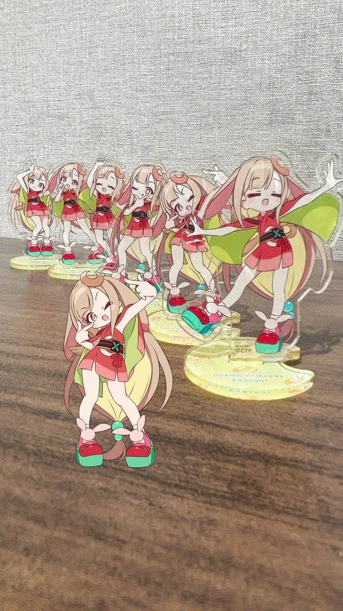
日本経済新聞 電子版（日経電子版）さんがリポスト
出生率1.14、社会保障を直撃 支え手負担が2050年に40万円増の試算
出生率1.14、社会保障を直撃 支え手負担が2050年に40万円増の試算
なるせひろのりさんがリポスト
沖縄タイムスすげえな。玉城デニーの「遺族のnoteを見ていない」という大事な部分を消しちゃったよ。消したからってなかったことにはならないし、逆効果だと思うよ。
沖縄タイムス
@theokinawatimes
平和教育「幅広く学び、考え、話し合うプログラムを」 玉城知事、辺野古沖転覆事故の遺族投稿受け見解
https://
okinawatimes.co.jp/articles/-/185
0077
…
日本経済新聞 電子版（日経電子版）さんがリポスト
フィギュアスケートのルール大幅改革案、国際連盟が見送り
https://
nikkei.com/article/DGXZQO
DH0391R0T00C26A6000000/?n_cid=SNSTW005&n_tw=1780480232
…
高難度のジャンプを跳ぶ選手が不利になるなどの理由で、日本を含む有力国の選手や関係者が猛反発。当初目指していた2027～28年シーズンからの導入を見送りました。
フィギュアスケート:フィギュアのルール大幅改革案、国際連盟が見送り 日本などの反発で
軍手さんがリポスト
そんな故障の仕方あるんか
リジスさんがリポスト
水遊び、しましょう
なるせひろのりさんがリポスト
雲仙普賢岳噴火災害から35年。これだけは伝えていきたい。
TANK2ROW ✪ 櫻會
@TANK2ROW
日本テレビが叩かれてるけど、雲仙普賢岳の火砕流災害で死ななくても良かった消防団員を巻き込む原因を作った「民家侵入事件」を起こしたのも日本テレビ取材班だからな。
Torishima / INTPさんがリポスト
ASD者が「こだわり」からパニックに陥った時に、「そのこだわりを周りの他者に強要する」という事はあるにはあるのだろうけど、私の体感と体験だとASD者の「こだわり」を諦める様に強要するのは周りの他者(特に定型者)の方だったと感じている。
定型者的には強要ではなくて、教育やケアなのだろう。
寺ゞ
@StrangeAlien385
私はASDなのですが、「AをBにした方が良い」と直感した時に外的要因によりそれが実行されないと強い不快感からパニックになる。
所謂、「こだわり」と呼ばれるやつ。
定型発達者からみると、傲慢、我儘と判断されるが、私の欲望かというとそうでもない。
「どうでも良いや」と思える薬が欲しい。
Torishima / INTPさんがリポスト
これのもっと露骨なのが改修後の相鉄10000で、E231の内装そのままに吊り革、座席までグレーにしたせいで、車内全てが白、グレーでパッとしないというか、、
床を黒に張り替えるだけでだいぶマシになると思うんだけど。
cell
@irodorist_m
「ぱっと見汚くない」と仰いますが、このE231系は、ぱっと見が薄汚れてるように感じるんですよ。何でだろうな、何か気分が沈むなぁと思って僕なりに思うのは、この雑巾みたいな色の床が原因だと思うんです。壁が白（≠純白）であるが故に、床は汚れてこんな色になったんだろうなと思ってしまいます。
Buzz@本年もよろしくお願いしますさんがリポスト
刑務所9年 出所直後のリアル
10年ぶりの、うな重とコーラ。
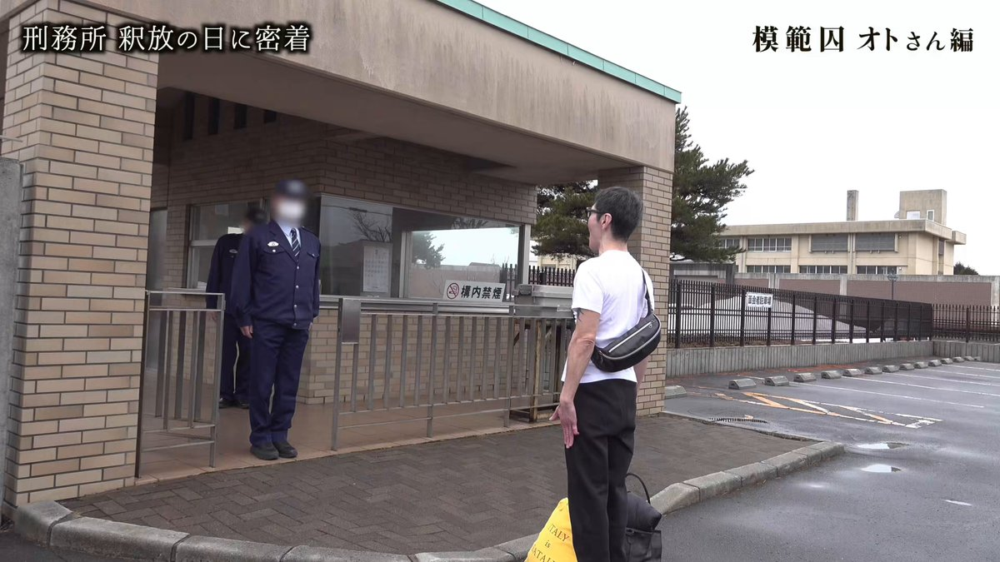
なるせひろのりさんがリポスト
ぬるぬる動くRTX Sparkのデモを見てきました！
こいつはすげぇ！Premiereもゲームもさっくさくやで！

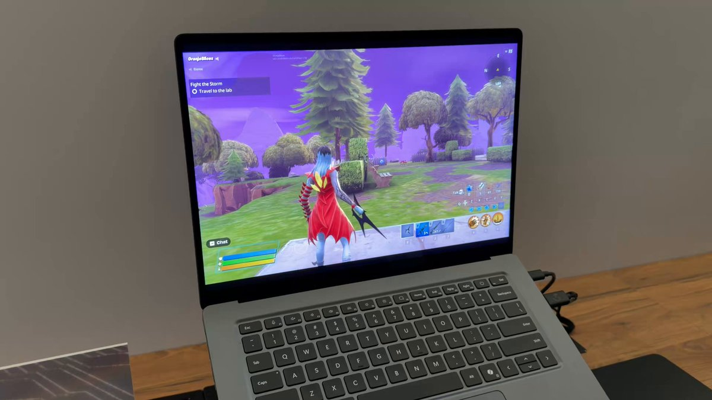
軍手さんがリポスト
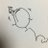
孤独死したオタクのコレクションは本人の腐敗臭が移ってどれだけ価値があっても業者が買取拒否する上に処分費用がかかるって話を見て「中古屋に並んでる明らかにオタクが死んだか生前整理したレベルの代物が大量に並んでる」はまだ良い方なんだなと思った
なるせひろのりさんがリポスト
こういう一部の人の行動が、スケボーのイメージを悪くしてる原因だよね。

Torishima / INTPさんがリポスト
新横浜公園が本領発揮している… ここは街を浸水被害から守るために貯水機能が内蔵された公園なんですよね。土地の凹凸を見ると一目瞭然。プールみたい。
新横浜公園（日産スタジアム）
@shinyoko_park
【新横浜公園から台風6号の影響による公園閉鎖について】6月3日（水）16時00分現在
台風6号の影響により、園内に鶴見川の水が流入したため、現在、園内の一部エリアを閉鎖しております。
▽詳細はこちら
https://
nissan-stadium.jp/news/detail.ph
p?id6a1fc605c147a
…
#新横浜公園 #日産スタジアム #新横浜
リジスさんがリポスト
猫も見惚れる尾山神社 神門の美しさ
#217find
AVITAMINOSEさんがリポスト
<投票用紙中断事態、選管委は解体レベルで責任を取るべきだ。>
6・3地方選挙当日、ソウル松坡・江南・広津区の投票所で投票用紙が底をついた。投票が中断された。大韓民国選挙史上初の前代未聞の事態だ。
リジスさんがリポスト
そういえばグーグルマップで国道のルートが表示されるようになってたね
リジスさんがリポスト
帰宅途中に異世界に紛れ込んだかと思ったけどいつもの奈良でした。
軍手さんがリポスト
ANAから来週の航空券のキャンセル連絡が来た、、、振替にはナビダイヤルで2時間待機が必要らしくて正気か、、、？になってる
いるか@心が酒びたっているんださんがリポスト
平成GAL
#バンドリ
#豊川祥子
#高松燈
なるせひろのりさんがリポスト
ムスリムの後ろ！！！
やっぱり共産党がいた！！！
日本人社会の文化破壊を目論んで
動いてるのはやっぱり共産党じゃねーか
たろうまる
@taroinagaki025
川越のモスクの土地、
地主から不動産屋兼建築リフォーム会社が買い取ってモスク側に売ったらしい。
建て替える前の写真。
どうやら共産党が絡んでいた模様。
AVITAMINOSEさんがリポスト
ソウル市長選挙において、18～29歳の男性の75.3%がPPPに投票したのに対し、同年齢の女性はわずか41.4%のみでした。これは、歴史的に最も右寄りのグループとされてきた70歳以上の年齢層よりも高い割合です。
若年男性は韓国全体で最も右翼的なデモグラフィックです。
なるせひろのりさんがリポスト
だってニャル子さんの原作表紙は全てこれだからな。ちなみにワイは6巻表紙が1番好き。お前はトリコ？
電光MMM
@MMMbluefilm
お前なんなんだよ！！ x.com/wstcg/status/2…
Torishima / INTPさんがリポスト
日本の街が比較的他国と比較して綺麗な状態なのは、行政の方針として清掃に重点が置かれているみたいなことがあるわけでもないので、単に雨量が多く定期的に台風のような嵐が来て、街や道を勝手に綺麗に洗い流してくれているからなのでは？ということを嵐が来るたびに思う
ユウマボウズさんがリポスト
速報
アニメ『ガールズバンドクライ』より、
「チャイナver.」グッズの登場です
場面写を使用した商品もお見逃しなく
全国のアニメショップ、通販で順次予約開始です！
商品詳細は画像をチェック下さい
▼ご予約はコチラ▼
https://
yyworld.kawaiishop.jp/categories/641
2654
…
#ガルクラ #GirlsBandCry
Torishima / INTPさんがリポスト
こういうの
寺ゞ
@StrangeAlien385
私はASDなのですが、「AをBにした方が良い」と直感した時に外的要因によりそれが実行されないと強い不快感からパニックになる。
所謂、「こだわり」と呼ばれるやつ。
定型発達者からみると、傲慢、我儘と判断されるが、私の欲望かというとそうでもない。
「どうでも良いや」と思える薬が欲しい。
Torishima / INTPさんがリポスト
絶賛稼働中ですね
MASA(航空宇宙・軍事)
@masa_0083
今こそ首都圏外郭放水路の真価が試される時だ。「地下神殿」のオペレーションルームのみなさんがうまく対処してくれるでしょう。
Torishima / INTPさんがリポスト
AI従量課金の阿鼻叫喚地獄のはじまりだ
ITmedia NEWS
@itmedia_news
「使い物にならなくなった」──6月1日からの「GitHub Copilot」新料金、SNSで不満続出 他ツールへの移行表明も
https://
itmedia.co.jp/news/articles/
2606/03/news124.html
…
Torishima / INTPさんがリポスト
これ、まじで解決法が
「歯を食いしばって無理矢理我慢する」
又は
「こだわりを押し通す胆力と権力を持つ」
以外の解決策が無いの人類進化上の欠点としか言いようがない
寺ゞ
@StrangeAlien385
私はASDなのですが、「AをBにした方が良い」と直感した時に外的要因によりそれが実行されないと強い不快感からパニックになる。
所謂、「こだわり」と呼ばれるやつ。
定型発達者からみると、傲慢、我儘と判断されるが、私の欲望かというとそうでもない。
「どうでも良いや」と思える薬が欲しい。
Haruhiko Okumuraさんがリポスト
今日は参院憲法審査会の傍聴に行ったのですけれども、始まる前に自民党の女性議員が2人でせわしなく動いていて「何をしているんだろう？」と思ったら「あの2人はいつも早くきてコップに水を入れて自民党議員の席に置いて回ってるんだよ」と聞いて、ぎょっとしました。
昭和を何年やるつもりなので…？
ろじぱら ワタナベさんがリポスト
フォロワー大半これ
Torishima / INTPさんがリポスト
ChatGPTの文体のキモさは「ご存知の通り日本語は助詞が重要です。助詞を絶対に省略しないでください」というとまあまあ改善される
ゆうきゆうマンガ家の精神科医マンガで心療内科(50巻以上＆アニメ化)さんがリポスト
生きるのがつらい、という人向けの太宰治のライフハック。
永瀬アンナさんがリポスト
表紙公開
6月10日(水)発売の声優グランプリ7月号表紙＆巻頭大特集は、TVアニメ『あかね噺』より高橋李依さんが登場
落語稽古のお話や、演じている高良木ひかるについても深掘り！ 着物と白のワンピースというひかるをイメージしたグラビアも永久保存版です！
詳細はコチラ
『シャインポスト』公式さんがリポスト
『シャインポスト』のイベントに出演させていただきます！
FFFのみんなの気持ちを背負って頑張ります
『シャインポスト』公式
@SHINEPOST_PJ
▽チケットのファンクラブ先行（抽選）販売の詳細はこちら！
https://
shinepost-fc.jp/contents/10755
87
…
#シャインポスト
なるせひろのりさんがリポスト

自販機でジュースを買って、左折車が来てるのに右折するアホ。
自分勝手にも程がある。
#危険運転 #自己中 #免許返納 #あたおか

Torishima / INTPさんがリポスト
ByteDanceのチームが、WavFlowのTTS版のような手法WavTTSを提案している。
E2-TTS・F5-TTS系の波形予測拡張版のような形で、直接音声波形を生成する。
arXiv Sound
@ArxivSound
Wenxi Chen, Dongya Jia, Yushen Chen, Zhikang Niu, Yuzhe Liang, Xiquan Li, Ruiqi Yan, Ziyang Ma, Guanrou Yang, Sanyuan Chen, Yue Wang, Zhuo Chen, Kai Yu, Xie Chen, "WavTTS: Towards High-Quality Zero-Shot TTS via Direct Raw Waveform Modeling,"
https://
arxiv.org/abs/2606.03455
Haruhiko Okumuraさんがリポスト
ついに一般向け報道で「推算値」「PVs」という言葉が出てきました。
「PISAなどで採用されている、母集団の能力分布を適切に推定できる推算値「PVs」を新たに用いて分析したところ・・・」
https://
kyobun.co.jp/article/202606
0201?ref=share_button
…
議論のレベルを引き上げるという意味で重要な一歩です。教育新聞，素晴らしい。
小の算数と中の英語で学力低下を確認 全国学力調査分析
Haruhiko Okumuraさんがリポスト
Micorosoftが先ほど発表した独自モデルのMAIは、蒸留なし、合成データなしという、徹底したアプローチで作られており、それでいてClaudeやGPTに迫るレベルになっているので、この論文は実質的に今一番オープンな最先端AIの作り方かも。
https://
microsoft.ai/wp-content/upl
oads/2026/06/main_20260602_2.pdf
…
なるせひろのりさんがリポスト
MICHEE-N（ミッチー・Ｎ）さんがリポスト
また旋盤屋が1件廃業したらしい。
そこでやってた案件。
非常にめんどい手のかかりそうなモノ。
内職価格。でやってくれ！と。
断りましたとも。
断られて、どんな自分がアフォな事、押し付けようとしてたか気づいてください。
なるせひろのりさんがリポスト
【悲報】フリーランス映像制作者さん、90万円の案件で支払いを踏み倒されかける
幕張イベント用の映像6本を90万円で受注
↓
外注や家族の協力も使いながら制作し、大阪出張・都内移動などもこなす
↓
請求書を出すも2ヶ月音沙汰なし
↓
確認したところ、相手「エンドからの振込がないので払えません」
カズン/撮影配信編集してる人
@soeda00078
フリーランスになって割と驚愕したのが
支払いを踏み倒すカスが普通に存在していて踏み倒しても別に？って病気のヤツが居るということ
幕張のイベントで流す映像×６本の制作を依頼されて（過去に取引あり）外注したり妻ちゃんに手伝って貰ったりして90万で受注して
リジスさんがリポスト
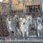
いやもう無理やろ
そろそろ巣立ちなよ
#つばめ
由羽@レモンアイコンの人さんがリポスト
「ローソンの看板そのまんま」グッズプレゼントキャンペーン♪
@akiko_lawson
フォロー&リポストしてくれた方から抽選で1名様に「看板そのまんまグッズ3種セット」をプレゼント(^^)
キャンペーン詳細はこちら♪
テスラさんがリポスト
涼宮ハルヒの憂鬱×JR東海
アニメ20周年記念キャンペーン
ボイスドラマなどの乗車特典や
聖地巡礼スタンプラリーも
【お問い合わせ】
推し旅キャンペーン事務局
https://
oshi-tabi.voistock.com/contact
詳細
https://
recommend.jr-central.co.jp/oshi-tabi/haru
hitv/
…
#涼宮ハルヒ #推し旅 #西宮イベント #関西おでかけ
なるせひろのりさんがリポスト
リメイク『R-Type Dimensions III』不評受け今後の改善計画発表―コミュニティメンバー＆追加テスター参加のQA実施、欧米向けパケ版は製造開始延期へ
https://
gamespark.jp/article/2026/0
6/03/167333.html?utm_source=twitter&utm_medium=social&utm_content=tweet
…
Steamのユーザーレビューでは「不評」のステータスになっています。
Torishima / INTPさんがリポスト
デザイン書の老舗・MdNが消滅へ インプレスに吸収合併
デザイン書の老舗・MdNが消滅へ インプレスに吸収合併
リジスさんがリポスト
ワシ「台風で交通が無理そうなので仕事休みます…」
会社「君は、明石海峡大橋が豪雨で渡れなかった時、高速船で淡路島に渡って、路線バスと高速バスを乗り継いで徳島までサッカーの試合見に行ってたよね？」
Torishima / INTPさんがリポスト
私はASDなのですが、「AをBにした方が良い」と直感した時に外的要因によりそれが実行されないと強い不快感からパニックになる。
所謂、「こだわり」と呼ばれるやつ。
定型発達者からみると、傲慢、我儘と判断されるが、私の欲望かというとそうでもない。
「どうでも良いや」と思える薬が欲しい。
リジスさんがリポスト
おはねす
雨すごい。長靴で外に出ました。
ママと神戸を楽しんだ日の写真
今日も一日頑張ろう
Torishima / INTPさんがリポスト
川崎のアゼリア地下駐車場の出口アトラクションみたくなってた

Torishima / INTPさんがリポスト
「レプリカだって、恋をする。」最新話見た。ぐぉおおおおお……レプリカという設定を出オチにせず誠実に深掘りしていくのが素晴らしい。それはそれとしてぐぉおおおおお………
軍手さんがリポスト
まじで生活保護が不妊治療無料なのは解せぬ
自分の生活費出せるようになってから子ども作ってもろて……
Torishima / INTPさんがリポスト
ブログ書きました： ［速報］マイクロソフト、UNIX系コマンドをWindowsに移植「Coreutils for Window」一般公開
［速報］マイクロソフト、UNIX系コマンドをWindowsに移植「Coreutils for Windows」一般公開
リジスさんがリポスト
軍手さんがリポスト
ANA新料金体系〜改悪
台風で欠航になった場合の振替便、変更可能な搭乗期間が5/19日以降 改悪になりました。
5/19-予約便出発日の前後7日以内
5/18まで-
予約変更できる運賃
・航空券の有効期間
・出発予定日+30日
上記のどちらか長い方
予約できない運賃
・もともとの出発予定日*+30日
悪天候などが理由の予約変更（ANA便への振り替え）
さたけさんがリポスト
書いた
声優の「おもんなバラエティ」はなぜ量産されるのか？〜労働集約型ビジネスの限界とIP化の歪み〜
声優の「おもんなバラエティ」はなぜ量産されるのか？〜労働集約型ビジネスの限界とIP化の歪み〜｜スミノフ
『シャインポスト』公式さんがリポスト
チケット好評発売中
『シャインポスト Orchestra LIVE』
珠玉の楽曲たちを、この日限りのスペシャルアレンジでお届けします
キャストの歌声とオーケストラが重なる、ここでしか味わえないライブ体験をぜひ会場で
2026/6/6(土)
大田区民ホール・アプリコ 大ホール
シャインポスト Orchestra LIVE
metroberry.jp
いるか@心が酒びたっているんださんがリポスト
かなり一方的だなと
Torishima / INTPさんがリポスト
opusで設計してcodexで実装してる人多いと思うんだけど、プランはどっちも最高額の使ってるのか気になる
片方最高プランは全然いけるけど、両方となると流石に個人仕様では辛い気持ちが芽生えるため
Torishima / INTPさんがリポスト
ローカル開発者には厳しい時代ニャ…
一方でAPIを用いたサービス開発とか各種連携は盛り上がっているイメージなので十分に民主化が進んだとも言えそう
金のニワトリ
@gosrum
なんか最近、AI界隈の人たちがAIの話をしなくなってる気がする
Torishima / INTPさんがリポスト
今年前半からは、
エンジニア側は、セキュリティとか権限とかのハーネスの複雑な問題にシフトしてしまい
非エンジニア側は、AIを活用できる組織どうするかという複雑な問題にシフトしていると思う。。
金のニワトリ
@gosrum
なんか最近、AI界隈の人たちがAIの話をしなくなってる気がする
Torishima / INTPさんがリポスト
なるほど。
翻訳機能やアルゴリズムといったX側の変化の影響もありそうだし、仕事でAIゴリゴリ使っている人は契約に縛られて話せないフェーズに来たというのは確かにと思った
金のニワトリ
@gosrum
なんか最近、AI界隈の人たちがAIの話をしなくなってる気がする
Torishima / INTPさんがリポスト
正直もう喋ること無くなってますw
AI駆動開発はほぼissue駆動やスペック駆動のナレッジしかない
claudeが推してるHTMLファースト開発も随分前から気付いてる人は実践してるし
コンテキスト設計も常に綺麗にしておけば
とりあえずは動くから
金のニワトリ
@gosrum
なんか最近、AI界隈の人たちがAIの話をしなくなってる気がする
Torishima / INTPさんがリポスト
リプや引用見てると割と共感する人が多いみたいなんだけど、あんまり共感できないのはTLの層が全く違うからだろうか
金のニワトリ
@gosrum
なんか最近、AI界隈の人たちがAIの話をしなくなってる気がする
Torishima / INTPさんがリポスト
たぶんユースケースや課題に接することがあまりないのかもしれない
課題があればそれを解決するために色々検討しないといけない
金のニワトリ
@gosrum
なんか最近、AI界隈の人たちがAIの話をしなくなってる気がする
Torishima / INTPさんがリポスト
codexの進化スピードがエグくて、『やっべ、真っ黒画面カタカタの価値が暴落している！！』になっているの関係してそう
金のニワトリ
@gosrum
なんか最近、AI界隈の人たちがAIの話をしなくなってる気がする
Torishima / INTPさんがリポスト
なんか最近、AI界隈の人たちがAIの話をしなくなってる気がする
> 電子図書館（情報学広場）におきまして、4月中旬より断続的に実施されておりました大規模メンテナンスは、第6回をもちまして一連の作業が終了いたしました。
https://
ipsj.or.jp/e-library/digi
tal_library.html
…
電子図書館（情報学広場）-情報処理学会
永瀬アンナさんがリポスト
/／
TVアニメ『#マリッジトキシン』
Blu-ray(特装限定版)1〜2巻 発売決定
ご予約受付中！
\＼
1巻：2026年8月26日(水)
アニメ第1話〜第7話
2巻：2026年10月28日(水)
アニメ第8話〜第13話を収録！
キャラクターデザイン・総作画監督
CRYSTALiA公式さんがリポスト
受賞
萌ゲーアワード2025ムービー賞
CRYSTALiA様『CRACK≡TRICK!』
作品の魅力たっぷりなかっこよくてワクワクするムービーです
https://
youtu.be/nkse8zUrUz8?si
=qbmYfFhaRG313CSy
…
プレイしてくださった皆様に改めて感謝を
未プレイの皆様、この機会にぜひプレイしてみてくださいっ
松岡…セラフィナ役
CRYSTALiA公式
@CRYSTALiA_AC
【お知らせ】
萌えゲーアワード2025
『CRACK≡TRICK！』がムービー賞を受賞いたしました！
ムービーはもちろん、楽曲も作品をイメージして細部までこだわって制作いたしました！
皆さまありがとうございます！
受賞コメントも是非ご覧ください！！
#クラトリ x.com/moeaward/statu…
情報処理学会に限らず、同じシステムを使っている大学の機関リポジトリとかも一斉に使えないで、全国的に困っていると思うけれど、何の説明もない
https://
x.com/jnsgsec/status
/2056245259324252351
…
kitata9
@kitata9
情報処理学会の電子図書館がまたメンテナンスしている…週末ワーカーとしては永遠に見れなくて中々困る＆この規模なら情処会員のメールで事前案内しても良いレベルなのではなかろうか。
取り急ぎヤッチョ GPT の Gem を公開しました ぜひお手元に召喚してみてください（プロンプトは後でどこかに全文貼ります）
Google Gemini
Opus 4.6 vs 4.7 の比較のため、本編字幕や公式設定など大量の情報を投入し両者に徹底討論させてヤッチョGPTの錬成実験をしてみていたが、錬成後のプロンプトをダメ元で無料版 Gemini の Gem に入れてみた所、信じられない解像感で””本物””のヤッチョを錬成できてしまって、手の震えが止まらない
Torishima / INTPさんがリポスト
おっ同じこと考えてる人いましたか
日常パートを音楽と共にダイジェストで流して疾走感/爽快感を出しつつキャラクターへの愛着を持たせる手法、『君の名は。』が前前前世でやってたことと一緒なんですよね
結構そこら辺のヒット作を研究してるんじゃないかと思ってます
Torishima / INTPさんがリポスト
似てるし反省活かしてますよね。君の名は。はタイムリープが理解されにくいって言って新海さんはタイムリープを使わなくなった。超かぐや姫！はタイムリープはあるけど決定論で破綻がないストーリー。
ミルヒー
@HELIX_62
『君の名は。』と『超かぐや姫！』は話の作りも似てる作品だと思ってる
恋愛とかループとか隕石とか共通点が多い作品だけどそれ以外にも x.com/kikuri_dayo/st…
Torishima / INTPさんがリポスト
『君の名は。』と『超かぐや姫！』は話の作りも似てる作品だと思ってる
恋愛とかループとか隕石とか共通点が多い作品だけどそれ以外にも
エキトイさん(結束トゲトゲ)
@kikuri_dayo
超かぐや姫、ミルヒーさんがこの間「これは今の高校生達にとっての【君の名は。】なんだ」みたいなこと言ってて、もうこれは自分世代の作品じゃ無いんだなと思いちょっぴり悲しくなった
Torishima / INTPさんがリポスト
『超かぐや姫！』の面白い部分って、「運命を書き換える」という事をモチーフ・主題にしていながら、一方でSF的には決定論を採用している部分なんだよね。